Roger Southwind, for himself, and on behalf of the members of the Lac Seul Band of Indians, et al. v. Her Majesty the Queen in Right of Canada
This transcript was made with automated artificial intelligence models and its accuracy has not been verified. Review the original webcast here.
Justice Wagner (00:00:39): Good morning to all.
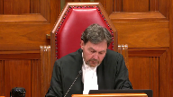
Before we begin this morning, I would like to take a few moments to express our sadness at the news of the sudden passing of Joseph RVQC of British Columbia, a well-known advocate here at the Supreme Court of Canada and a much-admired member of the bar.
I speak on behalf of all of my colleagues when I say that his advocacy skills were second to none.
Some have referred to him as the court whisperer, given his long line of victories here at the court.
He defended the Canadian Charter of Rights and Freedoms with great passion.
And regardless of the odds, he has been quoted as saying, and I quote, if I must lose, I’d like to lose the right way, unquote.
Mr. RV became an officer of the Order of Canada in 2018.
It was recalled at the time that, and I quote, with keen legal acumen and dedication to social justice, he has played an unparalleled role in shaping the interpretation of the law on matters of civil rights and liberties, unquote.
Mr. RV’s legacy is outstanding, and we extend our most heartfelt condolences to his family and friends.
Now, let’s turn to this case this morning, in the case of Roger Southwind et
al. versus Her Majesty the Queen in the right of Canada et al.
For the appellants, Roger Southwind et
al., Roseanne Kyle, and Ellen Sigerson.
For the intervener, Sehat First Nation, Christopher Devlin.
For the intervener, Assembly of Manitoba Chiefs, Kalai Fox.
For the intervener, Manitoba Kiwatinawe Okimakanak Inc., Kate Kempton.
For the intervener, Treaty Land Entertainment Committee of Manitoba Inc., Arlie Schachter.
For the intervener, Anishinaabeg Nation, Cynthia Westaway.
For the intervener, Waukeshaq Onigum Nation, David G. Leach.
For the intervener, Big Grassy First Nation et al., Donald R. Colborne.
For the intervener, Coalition of the Union of British Columbia Indian Chiefs et al., Peter Millard.
For the intervener, Federation of Sovereign Indigenous Nations, Ronald S. Morris.
For the intervener, Atikamekwcheng Anishinaabeg First Nation, Stephen W. Carey.
For the intervener, Kwantlen First Nation, Tim Dixon.
For the intervener, Assembly of First Nations, Stuart Wotki.
For the intervener, Assembly of First Nations, Quebec Labrador, Benoit Amieux.
For the intervener, Grand Council Treaty No. 3, Kate Gunn.
For the intervener, Mohawk Council of Kahnawake, Stacey Douglas.
For the intervener, Elsipak Tag First Nation, Alyssa R. Lombard.
For the intervener, Chimawawin Cree Nation, Catherine J. Boyce-Parker QC.
For the intervener, Marbury First Nations, Radar M. Mogerman QC.
For the respondent, Her Majesty the Queen and Rite of Canada, Christopher Rupert and Michael Roach.
For the intervener, Attorney General for Saskatchewan, Pete Mitch McAdam QC.
For the intervener, Ms. Kyle.
Speaker 1 (00:05:35): Chief Justice, Justices, I will be making our main submissions this morning on behalf of the appellants and either myself or my colleague Ms. Sigerson will be making reply submissions.
For almost a century, Blacksoul First Nation has lost the use and benefit of over 11,000 acres of their reserve lands.
Lands that were set aside for them under the sacred promises of Treaty 3 because of their special importance to the nation.
As Chief Clifford Bowles stated in his testimony at trial, when Blacksoul people were told that their lands were going to be flooded, they said why?
Why would you do this to us after the Queen herself promised that these lands are forever for our use?
Now because of Canada’s inexplicable breaches and broken promises, the lands have been swallowed up for eternity.
These lands supported Blacksoul and were an economic driver for their ongoing existence as an Indigenous community with a distinct culture.
Stripping Blacksoul of their use of these lands undermines their ability to sustain their culture and their people.
This Court’s guidance on how equitable principles should be applied will not only help resolve this case, it will also assist the parties in their ongoing relationship of reconciliation.
We don’t take issue on this appeal with the trial judge’s findings of fact or the equitable principles that he identified.
The question before this Court is one of extricable legal principle, whether the trial judge applied those equitable principles in a manner that is consistent with the law.
Or in other words, whether in assessing equitable compensation, he actually used the right legal framework and analysis.
We say that he did not and that his errors must be considered on a standard of correctness.
And we say that the wrongs at issue in this case were egregious.
Canada’s conduct in this case is not only unconscionable by today’s standards, it was unconscionable in 1929.
A mere two and a half generations after the Crown entered into Treaty 3 with Blacksoul, Canada allowed their treaty lands to be flooded.
For Blacksoul people in 1929 and indeed for Blacksoul people today, this could be nothing other than incomprehensible.
And at tabs 3 to 9 of our condensed book, we set out some of the historical documents that were tendered as evidence in this case.
Those documents contain comments by Indian Affairs representatives about their concerns about impacts to Blacksoul, both before the flooding took place and afterward, including that their timber, houses, gardens, rice beds, muskrat swamps, and burial grounds would be flooded, that the reserve would be ruined for the purpose for which it was intended for Blacksoul’s benefit, and that the hardship and disaster would result to Blacksoul if reasonable compensation was not provided.
Despite the Crown’s egregious behaviour as Blacksoul’s fiduciary, the approach of the courts below fundamentally favoured Canada and not Blacksoul, the wronged beneficiary.
The trial judge found, and Canada now acknowledges, that Canada breached its fiduciary duties to Blacksoul.
Like other beneficiaries that had been wronged by their fiduciaries, Blacksoul is entitled to have the principles and presumptions of equity apply to the assessment of the equitable compensation for those breaches.
And ensuring that Canada lives up to its duty to Blacksoul is not just consistent with equitable principles, it’s essential to the Crown-Indigenous relationship.
Just as the lands in question are no ordinary lands, the Crown-Indigenous relationship is no ordinary fiduciary relationship.
The solemn commitments made to Indigenous groups are part of Canada’s foundation dating back to the Royal Proclamation of 1763.
So it’s essential in this case that compensation enforce the trust that is at the heart of the Crown-Blacksoul relationship.
We say that the courts below did not compensate Blacksoul on the basis that equity requires.
They did not assess compensation on the most advantageous use of the lands, flooding for hydro generation, instead they assessed compensation on the worst-case scenario for Blacksoul, a bare land valuation.
They also compensated Blacksoul for a fictional loss, a one-time expropriation payment in 1929 for an expropriation that never happened, even though the lands remain part of Blacksoul’s reserve to this day and will remain flooded forever.
The Crown-Indigenous relationship is no ordinary relationship.
The solemn commitments made to Indigenous groups are part of Canada’s foundation dating back to the Royal Proclamation of 1763.
So it’s essential in this case that compensation enforce the trust that is at the heart of the Crown-Blacksoul relationship.
We say that the courts below did not compensate Blacksoul on the
Justice Brown (00:11:08): So, what do you say then about Justice Gleason’s proposed method of valuation?
Because wouldn’t that be, in a way, just as fictitious?
Speaker 1 (00:11:21): Yes, thank you, Justice Brown.
Indeed, this use of hypotheticals to turn back the clock to try to surmise, really guess what may have happened in 1929 had Canada negotiated a surrender or expropriated the lands is a challenging issue in this case.
And although that is potentially one way to assess compensation in this case, we say the most principled approach to assess compensation in this case is not to stand in 1929 and try to infer what might have happened, but rather, as equity requires, to stand as of the date of trial and look back to see what actually happened.
In this case, we know that the lands were flooded.
We know that La Soule has lost the use and benefit of their lands forever.
And so that is the point in time, we say, should be where we start in deciding how to compensate La Soule for their losses.
If we need to stand in 1929, and we say we don’t under a principled approach, but if we do need to stand in 1929, we would say that if this matter is remitted to the trial judge, the presumption of most advantageous use would still apply to the assessment of equitable compensation.
And we would have to assume that La Soule, having the benefit of the doubt in this case as a case in equity, that La Soule would have received compensation, both based on the most advantageous use of their lands as flooded land for hydro generation.
Either way- You cast-
Justice Brown (00:13:06): You cast that as kind of an alternative argument, but isn’t, putting aside causation issues, isn’t that how Justice Wilson phrased the inquiry in Guerin?
It should be presumed that the band would have wished to develop its land in the most advantageous way.
In equity, a presumption is made to that effect.
That’s precisely what she said.
So it seems to me that your primary argument isn’t supported by Guerin, but, and again, putting aside causation issues, your alternative argument may find more support in the jurisprudence.
Do you acknowledge that?
Speaker 1 (00:13:46): No, Justice Brennan, I would say that the primary argument is also consistent with Garin because, of course, in Garin, the court did stand as of the date of trial and look back and try to infer for what might have or what must we might have been able to use your lands for in order to try to determine the most advantageous use.
Of course, this case is more straightforward in this respect because we don’t have to consider hypotheticals or have any inferences drawn by the court to determine what the most advantageous use of the lands would be.
That use is flooding for hydro generation purposes.
So, the issue really becomes one of valuation.
So, standing as of the date of trial, how does the court value the use and benefit of the lands for hydro generation?
And indeed, that is the evidence that Laxle adduced at trial to try to find some proxies or measures of how you value the use of the lands for flooding purposes over the last almost 100 years.
So, maybe what I…
Justice Brown (00:14:53): maybe what might be helpful and you don’t have to deal with it now, but to understand, it would be helpful for me to understand what you mean by, you know, looking from the present day back at that, what that means to you, because I would have simply thought that there’s really little distinction between that and what Justice Wilson did in the sense that you’re looking back, you’re putting yourself into the shoes of the actors in 1929, and of course we can’t know for certainty what anyone would have done in 1929, but on the evidence taking the right principles of valuation, let’s just say hypothetically Justice Gleason’s principles and say, right, what would realistically have happened at that time?
But maybe you mean something else by it, and so you might wish to develop that in the course of your submission.
I’m going to signal to you, I see an issue there.
Speaker 1 (00:15:53): Thank you, Justice Brown.
Yes, I do think it’s a causation issue, as you stated earlier, and I definitely will take the Court through the analysis of the causal links in this case.
But getting back to the fundamental errors, so the first error we say is that the Court did not give Laxol the benefit of the presumption of most advantageous use, and the Court provided compensation for a fictional loss, not Laxol’s actual loss.
Laxol did not lose an expropriation payment in this case, there was no expropriation.
Laxol has lost the use and benefit of their lands forever, and that is what compensation must be assessed for.
And fundamentally, the approach that the courts took below did not favour Laxol.
The approach favoured Canada, and this is inconsistent with the need for the remedy in equity to serve a purpose of deterrence, and I submit it’s also inconsistent with the goals of reconciliation.
Both equity and reconciliation require compensation to be based on the most advantageous use of Laxol’s lands for flooding purposes.
Laxol continues to hold the beneficial title in those lands.
The flooding that Canada allowed to happen increased their value, and Ontario, Manitoba, and power companies have been benefiting from the flooding of Laxol’s lands for almost a century.
Equity requires that Laxol benefit from the use of their lands on the most advantageous basis.
So turning now to…
Justice Rowe (00:17:37): If I understand you correctly, you’re asking the courts to provide compensation looking backwards, and then you will be looking to the hydroelectric companies for compensation going forward.
Is that it?
Yes, that’s it.
Speaker 1 (00:17:57): Thank you Justice Roe.
Absolutely, Laxle is not looking to have any kind of double recovery here.
What this case is about is compensation for the Crown’s egregious breaches of fiduciary duty, those inexplicable breaches that the trial court found.
Justice Rowe (00:18:14): But then what you’re saying is that you want compensation for what’s in the nature of a roughly 100-year lease, because if you’re looking for a compensation from this point forward from the hydroelectric companies, they really have nothing, do they?
I mean, you’re saying you want to be compensated up until now from the crown and right of Canada, and after this you’re going after somebody else for the future.
Speaker 1 (00:18:43): Justice Rodin, I’m not sure that’s a correct characterization because what Laxsoul has lost is not just something in 1929, nor is it just, nor is it something that’s happened over the last 90 years and will stop as of, you know, the date of the compensation award.
Their loss will continue forever.
And so that is why past, current and future losses need to be taken into account in the assessment of compensation. Right.
Justice Rowe (00:19:13): But I guess my point is a very simple point.
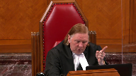
Are you asking that the courts include in an award, as against the Crown and Right of Canada, the use of the lands from 2020 onwards?
Or are you saying, ah, well, in the future, we’re going after the hydroelectric companies?
Because I’m not sure you can have it both ways.
Speaker 1 (00:19:38): I totally agree Justice Roe we can’t have it both ways and it really will depend on the guidance provided by this court but if this court provides direction and remits this matter back to the trial court and tells the trial court that they must try to assess compensation of course it’s it’s not a calculation it’s an assessment but do the best to assess compensation for Lakso’s losses if you tell the trial court that they must take into account future losses obviously that would affect any compensation that might like Lakso might at some point in time seek against third parties using the lands they can’t have double recovery they’re not seeking double recovery it really is a matter of how do we measure how do we measure what Lakso’s lost the use and benefit of their lands one way to value that loss is to look at the the hydro benefits that have resulted from the flooding of those lands that’s one proxy it’s a proxy it’s not an exact match
but it’s a proxy of what those lands are worth today as a result of being flooded by standing at the date of trial and doing that assessment as equity requires that allows the increase value of the lands to be taken into account which of course is another principle that Justice Wilson commented on in Garen that the beneficiary is entitled to the increase in the value of their asset during the time of the breach so we look at it at the date of compensation not the date of deprivation so by standing at the date of trial we are able to look at the fact that for example there were eight there are eight new generating stations that have been generating electricity as a result of the flooding of Lakso’s lands
and so we say that that is a principled approach the revenue sharing model though is just one proxy it’s just one way to try to get at what is the value of these lands the plaintiffs at trial also adduced evidence for other proxies or models to try to get to that value ation question one was the lease model which was based on historical leases in the Treaty three area prior to 1929 and another model from Professor Josios that was brought forward was a utility corridor model which was an another way to consider what the value of the lands might be the use of the lands might be based on what Ontario itself does when utility companies use their lands for utility purposes so again these are proxies this evidence was before the trial judge to try to do that very difficult job that Justice Wilson talked about in Garen to try to value what was lost to try to measure that compensation I do want to make it clear that
Justice Moldaver (00:22:44): could I just ask you a question, I’m just a little bit confused.
If we go back to 1929, the basic proposition, as I understand it, is that the government failed to do what it was supposed to do, failed to negotiate this whole thing, failed to give the Lac Seul ban complete disclosure, and so on and so forth.
And that Lac Seul would have been entitled, if I understand the argument correctly, to compensation based on the best and highest use of that property at that time.
In other words, if you were just going back then, that would be the presumptive position that they’re entitled to the value of the land at its best and highest use, which would have been hydro, flooding for hydro purposes.
And if you work out an amount, the value of the land is certainly going to be much enhanced from $1.29 an acre.
But here’s where the causation kind of comes in, because this notion that really you should have been entitled to a profit sharing, there’s strong evidence to say that was off the table then.
That was not something that would have been really considered.
So aren’t we really looking at this from the point of view of accepting your position that there was an egregious breach of trust here and breach of fiduciary duty.
The exercise is to determine how much would have been paid for that land.
How much would the government have paid acting honorably over and above $1.29, assessing the value of this property from its best and highest use.
Is that right or is that wrong?
Because you just threw in that you can look at it from the date of compensation.
And this is where I’m having a little trouble figuring out where that takes us.
Speaker 1 (00:24:55): Thank you Justice Moldaver.
I say they’re alternative approaches.
So you can stand at the date of trial, which of course equity allows the court to do, and determine what has been lost.
We have to recall in this case that what has been lost was not a one-time payment in 1929 because there was no expropriation.
The Crown consciously chose not to follow its own standards, its own normal practice of seeking consent through a surrender.
It did not get a surrender, it did not expropriate.
So the lands are still…
Justice Moldaver (00:25:34): for a moment.
Let’s just hypothetically say that in 1929 there had been the proper negotiations and a settlement had been arrived at based on what the highest and best use of the land would be in 1929 i.e. flooded for hydro purposes and a payment had been made at $10 an acre as opposed to $1.29 or something.
I’m just throwing out some numbers here.
Overlapping speakers (00:26:01): Yes.
Justice Moldaver (00:26:01): Would you be able to come back today and say, well, wait a minute, you know, we should have gotten more because this has been a really successful project and I’m just missing this.
Speaker 1 (00:26:11): Yes, thank you, Justice Muldavey.
I’ll try to to make this submission clear.
There are alternative approaches.
At the end of the day, what we say equity demands in this case is that compensation for LACSO will be based on the most advantageous use of the lands for flooding purposes.
We say that you don’t have to go back in 1920 to 1929 and infer what might have happened, but if you did, if this court is of the view that that is the best way to deal with compensation in this case, we say that the presumptions of equity must apply.
So most advantageous use of the lands based on flooding purposes and we have to the question then becomes how do you value the lands for flooding purposes in 1929.
That would be the question and that’s essentially Justice Gleeson’s approach and dissent because of the legal error she found.
The difference we have with Justice Gleeson’s approach is that we say it doesn’t have to go back to the trial judge to consider whether LACSO could have negotiated more for the use of their lands.
LACSO is entitled to a presumption that they would have received compensation based on the use of their lands for flooding purposes.
Justice Côté (00:27:28): Was there any evidence filed by the appellant at trial regarding what would have been that extra value to the land?
Or was the position of the appellant just centered under the new sharing agreement?
Speaker 1 (00:27:44): Thank you, Justice Côté.
So there was no appraisal evidence led by the plaintiffs at trial because the lands have not actually been taken in this case, but I would also say that there was this fundamental difference of approach that is apparent in the judgments below and really why we’re here before this court to get guidance on how do you deal with this case where there was a breach, but the lands have never been taken and remain in the reserve today.
So this diametrically opposed approach at trial, we have the Crown adducing appraisal evidence, but only for a bare land valuation, not for use in flooded purposes based on their theory that what Laxsoul is entitled to is a one-time payment, fictional payment for an expropriation in 1929, and then we have the plaintiffs adducing evidence that there are proxies to try to value the lands.
So we say that the revenue sharing evidence isn’t to show that the Crown should have negotiated a revenue sharing agreement in 1928.
The trial judge made a finding that that would not have happened, but it’s a proxy for the value of the lands over the last 90 years.
Justice Brown (00:29:01): So, and I’m sure the failing is mine, but I’m still confused then by the distinction between your primary and your alternative argument here, because you say both of them have to take into account a value premium for hydroelectric storage.
So what is the difference between the two?
Why does one get you to revenue sharing and the other, you’re concerned, might not?
Speaker 1 (00:29:38): So the distinction perhaps is not that great, Justice Brown, because really it’s two ways of trying to get to compensation based on the most advantageous use of the lands with the balance favoring Laxsul.
And you know the revenue sharing model may not be the approach that the trial judge, if it’s remitted to the trial court, ultimately thinks is the best way.
Because it’s a proxy, it’s just trying to determine what is, you know, kind of, if I were an owner of lands and my lands were flooded, what kind of return could I expect to get on the use of my lands for flooding purposes?
That’s its purpose.
It’s not to try to show that the Crown would have negotiated a revenue sharing agreement in 1929.
And that argument has evolved over the course of this hearing, certainly in the pleadings.
The statement of claimant was brought forward more as a, you know, duty to negotiate a revenue sharing agreement.
The trial judge found no such duty and the arguments have evolved, as they often do in these cases.
So it’s not a duty issue, it’s a valuation issue.
And at the end of the day, whether the trial judge finds that evidence of Professor Gillis helpful in order to determine the most advantage or valuation of the most advantageous use of the lands, I think would be within the trial court’s purview to consider.
And these other models may work better, the lease model or the utility corridor model.
So at the end of the day, as I said, the most important thing here is for Lac Sol to be compensated based on the use of the lands for flooding purposes.
And as I was saying, the distinction with Justice Gleason’s approach is that the trial judge doesn’t need to consider whether or not Lac Sol could have done better in 1929 if that’s the approach that this court directs at the trial court.
Justice Moldaver (00:31:32): Can you at some point please direct your attention to, not now, whenever you get to it.
Because all of this is based on, if we go back to 1929, so the band lost the right to negotiate properly and all the bad things the government did.
And maybe they would have worked out a settlement.
Maybe they would have worked out a monetary settlement that was acceptable to both sides that would have approximated the best use of the land as opposed to what happened here.
They ended up getting the least profitable use for the land.
But they may not have been able to reach a settlement too.
And at some point I’d like you to address the question then, if in fact the government in those circumstances, having bargained in good faith but not able to get to a settlement, chose to expropriate, how expropriation would look in those circumstances?
Would it be just the normal form of expropriation, market value of the property?
Or would it be taking into account fiduciary duties, reconciliation, and probably a significantly higher expropriation payment than normal?
If you could just keep that in the back of your mind.
Speaker 1 (00:32:58): I’m happy to answer that question right now, Justice Muldaver, because it is central.
If this court were to direct that compensation is to be assessed based on inferences of what could have happened in 1929, we say that even on an expropriation, in an expropriation scenario, the Crown would have had a fiduciary duty to ensure that Lac Sol did not end up getting the short end of the stick here.
Because when the Crown is taking lands, reserved lands, even if it’s for a public purpose, as this court said in Apachesett and the Soyuz, even then they have a fiduciary duty to protect the interests of the First Nation and they have a fiduciary duty to make sure that the bargain isn’t exploitative.
Ms. Carr, in the case of Lac Sol,
Justice Côté (00:33:48): case like that, I think in 1929, the Indian Act was to the effect that the quantification of compensation was to be treated like other lands, like proceedings by such company, municipal or local authority in ordinary cases.
Speaker 1 (00:34:08): we consider that?

Thank you Justice Cote.
So that provision in the Indian Act as the Court of Appeal noted that part of that section 48 2 deals with expropriations by municipalities local governments.
As the Court of Appeal found it does not apply to takings by the federal crown itself and so we say that if we have to consider what might have happened on an expropriation we have to assume that Canada would have met its fiduciary duties to lack soil.
We can’t assume that they would not have and we say that in order for the crown to have met its fiduciary duties it would have had to ensure that the increased value of the lands which the crown itself knew based on its experience with Stoney and as we point out in our factum you know the similar the same Indian Affairs representative was involved in both so they knew the lands were more valuable as flooded lands they knew how valuable this project was and so as a prudent fiduciary protecting the interests of their beneficiary they would have had to ensure that the compensation reflected that increased value of the lands.
Justice Rowe (00:35:22): Just a thought, let’s say the government of Canada, the Crown and Right of Canada had dealt in a fair and honourable way and had made, you know, good faith offers, but for some reason the Band had said, no, we don’t want to do this.
And the government said, well, I’m afraid in the circumstances we’re going to expropriate.
It would be absolutely extraordinary if the government sought to expropriate the property for any other price than the one that they’d offered.
I mean, it seems to be, I mean, how could you conceive of saying this is worth X in a fair agreement and then say, oh, now we’re expropriating, we’re going to give you one tenth of X.
I mean, if you’ve made a good faith offer as to what you think the land is, I think you’re kind of stuck with that number.
So in a funny way, I wonder if expropriation gets you to exactly the same number as good faith negotiation.
Speaker 1 (00:36:23): Yes, interesting Justice Roan and of course the trial judge does find that he he thought the result would be the same.
The problem with his approach of course was he assumed that the result would be the lowest payment to Lacksol and he did not take into account the ongoing fiduciary duties of the Crown that they would have had to Lacksol in those circumstances to make sure that the bargain wasn’t improvident.
So perhaps to assist with this this issue about what do we step stay in the at the date of trial and look back and try to value what’s been lost and it’s a valuation issue I would just want to reiterate that it’s a valuation issue.
How do we value the loss of the use and benefit of the lands for the last 90 odd years?
And and I want to talk about causation in relation to these issues because in our submission we think one of the problems with going back to 1929 and trying to surmise at least the way the trial judge did what might have happened he was really using a foreseeability approach which of course equity based on Justice McLaughlin’s common sense view of causation equity doesn’t care about foreseeability.
So this common sense view of causation that Justice McLaughlin talked about in this court has accepted since Cadbury Schweppes is as the way to go in these breach of fiduciary duty cases to assess compensation.
What needs to happen to meet the causation test is that the losses must flow from the fiduciaries acts in relation to the interest that they undertook to protect.
So no issue about foreseeability when you’re looking at the common sense approach to causation and as this court has said and as as Rotman says in fiduciary law there’s good his text fiduciary law there’s good reasons for the different approach between common law and equity and it’s because the primary purpose of fiduciary relief is to maintain the integrity of important relationships of high trust and confidence in society.
So that difference in causation is important and that measure of compensation has to be calculated to keep fiduciaries up to their duty as Justice McLaughlin noted in Canson.
So applying common sense view of causation to this case there is clearly a nexus between Canada’s breaches which included failures to act in Laxol’s best interests and to protect Laxol’s lands from exploitation for the use that Canada wanted to put them so those are the acts and the losses that flowed the losses weren’t a lost expropriation payment the losses were the ongoing use and benefit of Laxol’s lands forever.
That’s the loss that requires compensation in this case and we say the problem with compensating Laxol for a fictional whether it’s a loss surrender payment or a lost expropriation payment in 1929 is that it doesn’t accord with that common sense view of causation because there is there can’t be a nexus between Canada’s breaches and a lost expropriation payment for an expropriation that never happened.
Laxol didn’t come to this court to say we would like an expropriation payment
please they came to this court and said we and to the courts below we need to be compensated for what we’ve lost the use and benefit of our lands
so this case is not about an unperfected expropriation and I would say that the crown really has characterized this case as it’s really an expropriation we didn’t cross the t’s and dot the i’s
but it’s really an expropriation and we say that’s not the proper approach that completely erases Laxol’s perspective on what they’ve lost here which is the use and benefit of their lands forever
and so it’s it’s not about Canada’s failure to expropriate that’s not the breach that’s not the breach the trial judge found it’s about Canada’s continuing failure to do anything to meet its fiduciary duties to Laxol.
Justice Martin (00:40:44): May I ask how that argument stands and deals with the trial judge’s view that or finding that there would not have been a revenue sharing agreement?
How do they co-exist?
Speaker 1 (00:41:04): Thank you Justice Martin.
Yes, so the trial judge did find that Canada would not have negotiated a revenue sharing agreement in 1929 and we’re not taking issue with that on this appeal.
What we say the revenue sharing model does is provide a proxy for a measure of the value of the use of black souls lands over the last 90 years.
So again, you know, what’s the value in these lands?
The values in these lands today is their use for hydro generation.
But we knew that in 1929 too.
Yes, we did.
Justice Brown (00:41:46): So, you know, I don’t want to keep coming back to this issue, but again, the failing is undoubtedly mine, but I don’t see conceptually or practically the distinction between standing in the Year of Grace 2020 and saying, oh, well, we know it would have been used, that the highest and best use would have been hydroelectric storage.
And in 1929, looking forward and saying, we know that forever and a day it’s going to be used for hydroelectric storage and then fixing a number then as taking into account that future use, I’m struggling to get that distinction.
Speaker 1 (00:42:35): Thank you, Justice Brennan.
I will try again and I’m sure the failing is not yours.
So, I’d say the one difference between looking at compensation at the time of trial and looking back and trying to value the use of the lands over the last many years, as opposed to standing in 1929, is that we now know that there have been eight generating stations built.
And the Crown argues, well, those generating stations were built years and years after.
But if you’re standing at the date of trial and you’re looking at the value of what’s been lost here, and it’s the use and benefit of lands, the fact that there have been eight generating stations built in the last 90 years is relevant because with every new generating station, the value of the lands increases.
And so, it is relevant in that sense.
Now, again, if this court is of the view that we can get to the same result, which in our submission has to be that Laxsoul gets compensation based on the most advantageous use of the lands, if this court says you can get to the same result by looking in 1929 and assuming that they would have received that compensation in a surrender or expropriation, that’s a good result for the appellants.
But we feel that, you know, the principles of equity in this case do require some consideration of the increase in the value of the lands because they’ve never been taken, because there was no expropriation.
So, how do we capture, how do we capture the fact that in reality, not in a hypothetical, but in reality, the lands are still Laxsoul’s lands.
And Canada continues to have a fiduciary duty to Laxsoul in relation to those lands to this day.
And so, that’s really, I think, that distinction I would draw is the increased value of the lands over the last 90 years.
Justice Kasirer (00:44:26): May I ask, sorry, just to help me understand it, are you asking, when justice McLaughlin explained in Canson the common sense approach to examining the nexus, she said the plaintiff’s actual loss as a consequence of the breach is to be assessed with the full benefit of hindsight.
Is that, are you asking for any change in that, or is that what you’re trying to speak to now?
Speaker 1 (00:44:59): Thank you Justice Cassirer.
Yes, so we are saying that the same principle should apply here.
The benefit of hindsight needs to be used to determine what Laxsoul has lost.
We don’t need the benefit of hindsight though to know that the lands were going to be flooded, the lands were flooded.
They knew that in 1929.
We don’t even need the benefit of hindsight to know that that was going to be devastating for Laxsoul because the Crown knew that in 1929 and years preceding 1929.
But I think what hindsight does help with in this case is in trying to measure the increase in value of the use of the lands.
So again it’s a valuation.
How does hindsight help us consider what the land’s value is today as opposed to what it might have been even in 1929 when they knew the lands were going to be used for flooding purposes?
Justice Martin (00:45:56): Ms. Kyle, can I get back to the question that I posed because I’m having some difficulty trying to characterize this conclusion of the trial judge that there would not have been a revenue sharing agreement.
You seem to say that that is a finding of fact that we would review on obviously a standard of palpable and overriding error.
But when I look at it, I mean, he is really doing a hypothetical based on what might have happened at a time and giving forward a basis of assessment, i.e. The damages would not be assessed on that basis.
Isn’t that more like a choice of an assessment framework or even a negation of a contingency that you would have had?
But is it a fact in that kind of a sense?
And if a fact, isn’t it tied to a notion of what the fiduciary obligation is?
I mean, it just seems to me to just say it’s a fact and nobody can question it is it leaves my head asking that question.
Speaker 1 (00:47:13): Yes. Yes.
Thank you, Justice Martin.
Yeah, I would say that it goes to the issue of standard, right?
What standard was the fiduciary required to adhere to in this case?
And certainly, a prudent fiduciary would ensure that the beneficiary got the value of the lands, particularly when it’s a use that the fiduciary itself is putting those lands to.
And so, you know,
Justice Rowe (00:47:48): But in fact, fiduciary isn’t using the lands.
It isn’t the government of Canada that has developed the hydro potential.
Speaker 1 (00:47:56): No, but it, Justice Roe, I would say Canada orchestrated the flooding.
You know, back even in 1916-1917, Canada was the party who was knocking on Ontario’s door saying, please, let’s reserve the water rights here so that we can have this hydro generation project because Manitoba really needs it and Winnipeg really needs it.
So, Canada orchestrated it.
No, no, no, no, no, no, no, no, no, no, no, no, no, no, no, no, no, no, no, no, no, no, no, no, no, no, no, no, no, no, no, no, no, no, no, no, no, no, no, no, no, no, no, no, no, no, no, no, no, no, no, no, no, no, no, no, no, no, no, no, no, no, no, no, no, no, no, no, no, no, no, no, no, no, no, no, no, no, no, no, no, no, no, no, no, no, no, no, no, no, no, no, no, no, no, no, no, no, no, no, no, no, no, no, no, no, no, no, no,
Justice Rowe (00:48:24): I agree with you, but unless I misunderstood you, you seem to be suggesting that the Crown and Right of Canada was stuffing large amounts of money in its pockets and was simply not sharing it, whereas somebody might be stuffing money in their pockets, but it’s not the Crown and Right of Canada.
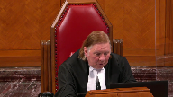
Speaker 1 (00:48:44): Yes, thank you Justice Roane.
No, I didn’t mean to suggest that Canada was stuffing money in their pockets and if they were, this course case would be a discouragement case, of course.
But they benefited.
They may not have directly financially benefited from this project, but Canada benefited from this project because they wanted hydropower to open up the West to support Winnipeg as a commodity market in Canada.
Justice Rowe (00:49:12): And in a sense, it doesn’t even matter whether they benefited.
They had a responsibility to ensure that the lax sold received a proper price, even if the whole thing turned out to be a fiasco.
They had a duty.
This so happened that Hydro was worked out.
Speaker 1 (00:49:30): Yes.
So to get back to your question, Justice Martin, I would say that we’re not taking issue with the trial judge’s findings of duties.
So we’re not taking issues with the four duties that he found.
If this court is of the view that some of those duties, and probably most relevantly, the duty to protect Laxol against an improvident bargain or to protect their lands against exploitation, allows this court to be able to draw an inference that Laxol should have received compensation in 1929 based on a revenue sharing agreement.
We definitely say that’s within the purview of this court to come to that conclusion.
So I didn’t want to suggest that there’s nothing this court can do with the revenue sharing agreement.
Really, the revenue sharing agreement, though, in our submission is not a duty issue, it’s a valuation issue.
It’s a way to value what Laxol has lost.
So I did want to make that point clear.
Justice Karakatsanis (00:50:40): I
Overlapping speakers (00:50:40): I guess I’m…
Justice Karakatsanis (00:50:40): If I can just ask you, I guess I’m having some trouble about how we factor in the eight later generating stations.
If, in fact, I assume from your submissions that there would have been a negotiation, had Canada not reached its duty and looked out for the best interests and assisted the First Nations perhaps in negotiating and reaching a settlement that was based on the best value for the lands as flooded lands for hydro generation, then isn’t that presuming that, in fact, there would have been a settlement reflecting that back, you know, going back to 1929 or whenever as a one-time payment and we’re looking at the present value of that?
Or are you saying that because there was never an expropriation, because there wouldn’t have been, it doesn’t matter what might have happened then had Canada not reached its duty, having reached its duty, it doesn’t matter what would have happened if it had not reached its duty, all we do is look at what was lost now.
Do you see what I’m getting at?
I just find there’s this tension between saying, well, you know, what we could have gotten if things had been done properly and what’s the present value of that versus forget about what could have happened, what have we lost now as of the date of trial?
Overlapping speakers (00:52:22): Thank you, Justice Caracastanis.
Justice Karakatsanis (00:52:25): you know, valued on almost sequential breaches, because it was, it’s almost like an initial breach versus there’s a breach every time there’s a new generating station.
I’m just trying to resolve that kind of tension in what you’re, in your submissions.
Speaker 1 (00:52:38): Yes, thank you Justice Kirsten.
This is this is a challenging issue.
And you know at the end of the day really whether a principal approach is to stand at the date of trial and look back and determine the valuation or the principal approach this court thinks is more appropriate is to to consider and presume that Laxle would have received compensation based on the most advantageous use in 1929.
It doesn’t really matter in the result because what is what is essential in this case is that we ensure that Laxle like every other wrong beneficiary gets the presumptions that equity provides them with.
So that presumption of most advantageous use and also that the balance favors them not the fiduciary who breached its duties and the trial judge’s approach fundamentally benefited Canada.
The balance was in Canada’s favor because they didn’t the trial judge didn’t take into account with respect any of these duties that Canada would have had had they chosen to negotiate a surrender or an expropriation.
So that’s fundamentally a problem with their hypothetical approach.
If this court is able to use a hypothetical approach in 1929 and get to a result where Laxle is compensated for the use of their lands on the most advantageous basis that’s what this court this is this is what the appellants are seeking from from this court.
Justice Côté (00:54:11): Is it your position, just try to tell me, that the presumption about the most favorable use permits you to change the valuation date instead of the valuation date being the date of the breach?

Then it would become the date of the trial.
Speaker 1 (00:54:33): Thank you, Justice Cotain.
It’s the ability to use hindsight and to value what’s been lost at the date of trial as opposed to at the date of the breach.
That allows us to look at the increased values over the last 90 years.
So that’s another principle of equity that allows courts to say we’re not going to worry about foreseeability in 1929 and try to figure out what, you know, what this value might have been in 1929.
Justice Côté (00:55:00): I always thought that when you value, when you have to assess or to value a breach, you need to determine what is the valuation date.
And then once you have determined the valuation date, then experts come into play, and then they have to assess, they have to put a factor about foreseeability.
They have to say, okay, prison value is this, and we have to take into account the future, but it does not change the valuation date.
It does not change the time where you have to look at when that breach occurred.
Speaker 1 (00:55:35): So, in equity, that valuation date can be taken at the date of trial.
So, for example, the share case, there’s a number of cases dealing with shares, and the courts have found that it doesn’t matter what the shares were worth when the fiduciary breached the duty, you have to look at how those shares increased in value over the course of time and the beneficiaries entitled to that benefit, to that increased value.
So, that’s really what I’m talking about when I’m talking about increased valuation and using the benefit of hindsight to try to determine how has the value increased over time.
And, of course, contingencies do need to be taken into account, but in this case, the contingencies aren’t whether or not the lands would have been put to the most advantageous use, which is what this court had to do and the courts below did in Guerin, because we know that the most advantageous use is flooding for hydrogenation.
So, we don’t need to worry about contingencies in that regard, and if there are contingencies to be considered, it would only be in relation to the valuation of what’s been lost, and that, of course, would be something for experts to provide opinion evidence on and for the trial court to consider if this matter is remitted back to trial.
Justice Rowe (00:56:54): Isn’t the breach of fiduciary duty, the failure to negotiate in good faith to arrive at a fair price in 1929, and if that is the breach of the duty, don’t the damages have to relate to the breach?
Speaker 1 (00:57:13): Justice Roe we say that the breach was not in failing to expropriate.
They had no duty to do so.
Justice Rowe (00:57:19): that was my question my question was is not what you’re alleging and perhaps I’ve misconceived it
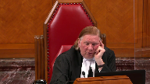
but I don’t think so that there was a failure on behalf of the crown to negotiate in good faith to arrive at a fair price taking into account all the factors in 1929 and if that is the breach of the duty does that not inform the equitable compensation does not the compensation have to relate to the breach
Speaker 1 (00:57:54): So the breaches that the trial court found were a breach, included a breach in failing to protect the interests of Laxol and a breach in failing to ensure the lands weren’t exploited.
So when we look at those breaches, what loss did that cause?
Canada’s failure to protect Laxol’s interests caused Laxol to lose the use and benefit of their lands forever and continuing to this day.
Justice Rowe (00:58:25): Yeah, but I’m going to come back to it again.
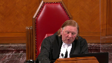
I mean, that is so vague.
I have no idea what it means.
It seems to me it has to be more concrete and specific, and it seems to me the whole theory of the case is that, you know, the Government of Canada had to protect the interests of the band in any negotiation for the taking of these lands, and they failed to do so, which I think is conceded, but the compensation must somehow relate to that breach.
If you say, well, it failed to protect the best interests in a very broad sense, I don’t know how you draw a circle around that.
I mean, it could be anything.
Speaker 1 (00:59:07): Thank you, Justice Roe.
Well, of course, we know that had they done what they were legally required to do and filed the Indian Act in 1929, cabinet would have had to bless whatever happened here at the end of the day.
And given that we’re talking about almost one fifth of Blacksoul’s reserve lands being flooded, it is conceivable that cabinet would have said no to the expropriation.
So assuming there would have been an expropriation or assuming that there would have been a negotiated surrender, we say that’s one of the challenges in trying to use a hypothetical.
Because what would cabinet have taken into account?
At a bare minimum, cabinet, of course, would have had to take into account the value of lands for the hydro generation.
That’s essential, because Canada couldn’t have met its fiduciary duty to Blacksoul if they didn’t.
They had to ensure that Blacksoul was compensated.
But we think that’s one of the challenges in trying to use hypotheticals.
What would have happened?
Justice Brown (01:00:04): But, you know, Justice Rowe raises, I think, an important point that I wonder if we both need to grapple with here, which is how to characterize the interest that should have been protected that wasn’t protected.

I mean, I find the trial judge’s reference to a duty to protect the band’s proprietary interest unhelpfully generic with great respect.
So what is it talking about?
Are we talking about an unlawful taking of the land?
Well, you’d point out the land wasn’t taken.
Was it a lost opportunity to negotiate a surrender?
Was it a lost opportunity to enter into a revenue sharing agreement?
Was it some combination of those things?
Because you can claim various ways of characterizing the breach in ways that run into a problem, such as construction of the dam without expropriation, such as loss of the land, because Canson didn’t do away with causation.
Canson limited the remoteness, the application of remoteness arguments, assuming that we’re just talking about the minority decision of Justice McLaughlin’s, and I realize it was applied in Cadbury Schweppes.
But Canada can say on the trial judge’s findings that the land would have been flooded in any event.
So putting aside remoteness, you have a causal problem.
You have an absence of causation.
But all that means is that the loss of the land, if there is a compensable harm here, that the loss of the land isn’t that compensable harm.
And so what is it?
That’s what Justice Roe is, and frankly me too, we’re trying to grapple with.
Now, Justice Gleeson says the real loss here, the substance of the breach, is the loss of the failure to negotiate a surrender that may or may not have secured a premium for the bare value of the land due to what we knew then and what we’ve since known is its intended use for hydroelectric storage.
My understanding from the earlier exchange that you and I had is that’s where you are too, but you’re saying that ideally that should account for the scale of the project as time has passed so that we now have eight generating stations.
Am I characterizing your submissions correctly?
Speaker 1 (01:02:47): You’re characterizing, Justice Brown, you’re characterizing my submissions correctly in the sense, however we proceed in this case, in our submission, we need to take into account most advantageous use and the fact that these lands have much more value now than they did in 1929.
It’s certainly much more value than a bare land valuation in 1929.
But really, I would submit that to try to try to hone in on this issue, Justice Brown, that you just spoke about.
You know, Justice McLaughlin and Canson talked about equitable compensation in the sense that if you can’t have in-species restoration, then we have to find a way to provide compensation in lieu of that.
So in this case, that’s correct, the lands were not taken.
So we’re not talking about compensation for the lands.
But what has been taken is the ability of Laxol to use those lands or to benefit from those lands.
And we have others, Manitoba, Ontario power companies benefiting from the lands.
And so we say that equity requires that that increased value of the lands, the benefits that it has generated is relevant.
And that’s partly the benefit sharing.
Justice Rowe (01:03:59): You seem to be saying that the scale of damages is completely different because there was no expropriation.
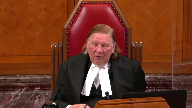
You seem to be saying that if there had been an expropriation, the damages would be lower.
But because there was no expropriation, the damages have to be on a different scale.
I don’t see how that’s relevant to the breach of the fiduciary duty.
Speaker 1 (01:04:22): Justice Rowe, I don’t want to suggest that the scale of the compensation would be different.
The scale of the compensation should be the same in either scenario.
What I am saying is that we need to find a way to restore what Laxsul has lost here, which is the use and benefit of their lands, their ability to benefit from the lands.
I was benefiting from that.
Justice Moldaver (01:04:46): jump in for a second here because I want to understand this.
Is it your position that in effect this fiduciary the breaches have not been cured till this day and to the extent the government has not made good in terms of rectifying the fiduciary breaches it runs the risk as long as they continue that any enhanced value of the land over this long period of time is something they’re going to have to wear.
I’m just trying to get this in my head.
Speaker 1 (01:05:20): Yes, thank you, Justice Maldivar.
No, I’m not suggesting that and thank you for bringing that forward because I do want to clarify that this case, the compensation for the breaches will be settled in this case, it will be resolved in this case.
And so we’re not suggesting that we’re only going to, you know, figure out the compensation up to the date of trial and then we’ll have a whole other lawsuit down the road for the future.
We want, but there are ways to take into account the future values and certainly Professor Hosios in the evidence led a trial did try to calculate the discounted value of future losses based on the revenue sharing model.
Overlapping speakers (01:06:02): So there are ways to do it.
Just as Karakatsanis has the last question for you.
Speaker 1 (01:06:06): Thank you, Chief Justice.
Justice Karakatsanis (01:06:07): I would just like to ask you how, because the Indian Act allows the government to take the land for public works and because we’ve recognized that Canada as a fiduciary also has public law responsibilities, I’m just wondering how you factor in the public interest, public duty when assessing both the duty and the quantum.
Because you haven’t, in setting up your framework you haven’t referred to that at all.
Speaker 1 (01:06:40): Yes, thank you, Justice Kara Kostanis.
So the fact that there was a public purpose does not change the nature of Canada’s fiduciary duties to lakhs sold in this case.
This court in a Pechacet and a Soyuz made it very, very clear that even on expropriations, the Crown has a duty to prevent exploitation, has a duty to ensure bargains aren’t improvident, and a duty to protect the interests of their beneficiary.
So the fact that this project had a public purpose does not fundamentally change anything, and certainly not the application of equitable principles.
The fact that there was a public use here is actually, in my submission, relevant when we consider the nature of the breaches here.
Canada’s typical standard was to seek consent of the First Nation before it would flood their lands, and the trial judge made a finding on that.
They did not do that.
They chose not to do that.
So the fact that they had tools in their toolbox that they could have used to achieve both their public purpose and ensure that they protected their fiduciary’s interests, that goes to the nature of the breach in this case, and certainly does not lessen Canada’s liability.
All right, thank you very much.
Thank you.
Justice Wagner (01:08:00): The court will take its morning break.
We’ll be back at noon sharp.
Speaker 2 (01:08:45): Good morning.
Justice Wagner (01:09:08): Thank you.
Be seated.
Mr. Devlin.
Speaker 3 (01:09:14): Thank you Chief Justice, Justices.
So the submissions I have in the next five minutes on behalf of the Shott First Nation, I think will help address a question that Justice Brown asked earlier this morning, how to characterize the interests that should have been protected that wasn’t protected.
And so Shott submits that the Aboriginal title jurisprudence supports the appellant’s position that equitable compensation requires more than expropriated value.
And this is because the valuation of the flooded reserve land on an expropriation basis ignores the sui generis Crown Indigenous relationship.
So the Crown’s fiduciary duty in the context of justifying infringement of Aboriginal titles, Shott says, is relevant to how equitable compensation should operate in the context of this appeal.
And this is in part because the jurisprudence related to the taking of reserve land from the laws arose from the law’s recognition of the sui generis Crown Indigenous fiduciary relationship.
So in Guerin, the court indicated that the Aboriginal interest in reserve land and Aboriginal title land are highly comparable and arise from the same pre-sovereignty interest in the land.
And so Shott is very submits that the court in whatever decision it comes to in this appeal maintains consistency between the Aboriginal title jurisprudence and in this case.
So in the Aboriginal title context, the Crown’s fiduciary duty requires infringements to be proportional.
And in Chilcotin, Aboriginal title can be infringed by the Crown only when infringements are proportional and the Crown satisfies its fiduciary duty.
The test for whether the Crown satisfied its fiduciary duty incorporates the Sparrow justification test.
And Sparrow really addresses the balancing or reconciliation between the exercise of the Crown sovereign power and the Crown’s fiduciary duty.
And this kind of analysis then speaks to a question that Justice Moldaver raised earlier this morning as well, which is, well, if there were no settlement in 1929 and Canada chose to expropriate, what would the expropriation look like?
Would it have to accept for reconciliation?
And the Aboriginal title jurisprudence allows us to include those sorts of that sort of proportionality and that balancing of the Crown power with the Crown fiduciary duty.
Now, Cichotte submits that in Chilcotin, this justification, this reconciliation of federal duty and federal power is really restated as a balancing of the public interest against the Aboriginal title interest.
But how is that balance achieved?
And this is the key point.
Infringements cannot be justified if they would substantially deprive future generations of the benefit of land.
So only the most compelling public need justifies depriving future generations of the benefit of their Aboriginal interest in the flooded lands.
And the lower court valuation of flooded land reserve based on expropriation, we say is disproportional as it privileges federal power over federal duty and ignores the Aboriginal sui generis interest in the lands meant to adhere, not just to the to the generation in 1929, but also to the future generations to come.
And that’s that unique Aboriginal interest in the land.
So proxy models presumably help with that valuation.
They were all hypothetical, of course, in 1929, whether we’re talking the revenue sharing or we’re talking the power generation models.
But the point being is that whatever the valuation assessment is, it has to account for this future generations being deprived of the benefits of those lands.
And so we say that the Aboriginal title jurisprudence assists the court in and supports the appellant’s position that more needs to be done to, as Justice Rowe said, draw that circle around the assessment of the damages.
Thank you very much.
Justice Wagner (01:14:21): CarlyFox
Speaker 4 (01:14:26): Thank you.
Good morning Chief Justice, justices.
In Canada it has fallen to the courts and this court in particular today to provide direction for how to reconcile disputes where one treaty partner has breached its sacred promises and how to assess equitable compensation to ensure that the wrong party is provided adequate reparation.
As Justice McLaughlin and Canson stated, equitable compensation awarded to the beneficiary must be linked to the equitable breach.
The Assembly of Manitoba Chiefs submits that in assessing equitable compensation there are two stages that must be completed to restore the wrong party.
The first stage is to determine the nature of the equitable breach and the second stage is to value the losses flowing from that breach.
The Assembly of Manitoba Chiefs submits that any loss suffered by a First Nation arising from the Crown’s breach of treaty or fiduciary duty cannot be adequately compensated without due consideration of the First Nation’s laws and perspectives through both stages of the assessment of equitable compensation.
In this trial, in this case the trial judge found that the Crown breached its fiduciary duties to the Lakso First Nation to act with ordinary prudence with a view to the interests of the First Nation and to protect and preserve the band’s interest in its reserve from exploitation among others.
After liability has been established it is submitted that instead of moving straight to calculating the loss there needs to be a fulsome determination of the nature of the equitable breach.
In determining the nature of the equitable breach I’ll make two submissions before you today.
First, claims involving a breach of treaty must consider the First Nation’s laws and perspectives regarding the treaty promises and the resulting relationship.
Treaties were entered into between two sovereign nations with two separate legal orders.
The central imperative of historical treaties was to establish a new structure of relationships between First Nations and the Crown that would endure forever.
This court has affirmed that the treaty relationship is sacred.
Performance of treaty obligations is of the highest order and calls for the highest standard of fiduciary conduct.
The promise and protection by the Crown of reserved land in the historical treaties is of significant importance.
The failure to consider the First Nation’s laws and perspectives in determining the nature of the breach of treaty results in the perpetuation of a one-sided view of the treaty relationship and in a remedy that fails to adequately compensate the First Nation.
In claims involving a breach of the Crown’s fiduciary duty First Nation’s laws and perspectives must be considered in relation to the loss suffered by the First Nation.
In this case the Lak’sul First Nation lost the use and benefit of its reserved land forever.
First Nation’s laws and perspectives conceive of the nature of the breach not just as the physical loss or alteration to the land but as a broader breach that alters relationships and affects future generations.
As outlined in our factum starting at paragraph 12 First Nation’s land has a unique and collective nature and First Nation’s laws come from the land.
The loss of land to a First Nation is particularly agreed just because of this fact and because the land is meant to sustain future generations.
The breach and resulting loss endure forever and affect the citizens of the First Nation in perpetuity.
If the nature of the breach is considered from the First Nation’s laws and perspectives the resulting assessment of equitable compensation would have attempted to uphold the ongoing treaty and fiduciary relationship between the parties and reflect the unique and generational value of the First Nation’s interest in its reserved land.
The Assembly of Manitoba Chiefs is asking this court to provide guidance for the establishment of a more principled framework for valuing equitable compensation in a matter that considers the unique and collective nature of First Nation’s losses.
This approach will infuse the final award with the First Nation’s laws and perspectives such that the compensation awarded will properly reflect the nature of the breach and the loss effort.
Rather than look at what the Crown could have but did not do the valuation of compensation must be reflective of the breach that occurred.
The Assembly of Manitoba Chiefs submits that the approach that the approach to equitable compensation in this case has had the effect of benefiting the treaty partner breach.
This failure continues to excuse the Crown’s unfettered discretion and perpetuates the historical disadvantages suffered by First Nations as a result of the Crown’s unlawful behavior with the result of perpetuating a distorted treaty and fiduciary relationship.
Justice Wagner (01:19:10): Thank you very much, Kate Kempton.
Speaker 5 (01:19:16): Good afternoon, Chief Justice, Justices.
I’m Kate Kempton representing Manitoba, Kewatinawi, Okimakanak, a tribal council consisting of 26 of the most hydro-affected First Nations in Canada.
Justice Moldaver, you asked a question to Appellant’s Council a few minutes ago about whether perhaps Canada might bear the risk in a situation of a continuing breach of an enhanced value having accumulated over the years that the breach continues.
I would put to you the answer to that is yes, but I would also put to you that Canada bears the risk or I would say duty in fiduciary law, inequitable law, we’re not talking about common law here, that it bears the duty and equity to in the situation of a continuing breach which we have here of the enhancement in international law to which Canada’s law must adhere or should adhere in this circumstance.
The decisions of the courts below are not in line with international law or other common law jurisdictions in respect of equitable remedies for breaches of duty owed to Indigenous peoples.
Canadian law can be, should be, and due to what is at stake, the imperative to decolonialize must be in accord with international law.
Canada says that it fully supports the UN Declaration on the Rights of Indigenous Peoples, it says so at paragraph 94 of its Factum.
It says Canada’s law on equitable compensation is consistent with Article 28 of UNDRIP.
Canada has just now tabled legislation, Bill C-15, to make UNDRIP part of domestic law applicable immediately and implemented through a mutually developed plan.
If this is true, if Canadian law of equitable compensation is consistent with these international norms, it requires more than what was decided in the courts below in this case.
It requires full application of restitutio in integrum.
That means restore the land, restore the people who lost the land, and restore the umbilical connection between the two.
This is the principle behind Article 28 of UNDRIP and all the other many sources of international law that we have cited in our Factum.
What does this mean in the context of this case?
It means A, restore the land, give it back, restored, rehabilitated, remediated.
If and only if states cannot do that, as here, they have to compensate for that value of the land.
B, restore the people.
Compensate for loss of culture, loss of dignity, loss of place in the world, all determined from the Indigenous perspective.
And C, restore the connection between the two.
A plus B plus C is what equitable compensation should provide for here.
The lower court ordered A, money for loss of land.
The appellants have set out how it did so incorrectly and we support that position.
The lower court ordered B, money for loss of people’s culture.
Our Factum sets out how this was too weak in comparison to international law and other common law jurisdictions, which I might add have applied cultural laws compensation in cases like this that is many, many times greater than compensation for loss of the value of the land.
And I will note that the sky has not fallen in those other common law jurisdictions or where the international courts have made decisions in respect to particular states when ordered to pay that much compensation.
The lower court, however, did not at all order C, it failed to order compensation for the connection between the people and the land.
It failed to order sharing of benefits or revenues made off the land.
In international law, the connection includes benefit sharing and how the land had been and in the future, if applicable, would be used to profit others.
And I ask this court to turn, when you’re done today, on the Sarah Macca case at paragraph 12 of our Factum, where the court quotes what that benefit sharing is supposed to restore here.
Thank you.
Justice Wagner (01:24:19): Thank you very much, Arlie Schachter.
Speaker 6 (01:24:25): Good afternoon Chief Justice, Justices.
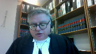
TLEC, the Treaty Land Entitlement Committee of Manitoba, wants to make one observation based on the comments from the bench this morning and also wants to address four guiding principles for the assessment of compensation.
First off, the compensation needs to be connected to the breach, but the breach is not a failure to share hydro revenues.
The breach is fundamentally failing to negotiate a bargain that recognizes the First Nation’s unique interest in the land at issue and the historical revenue stream is but evidence of a component of what that value was and Ms. Kempton spoke of other values as well.
Turning to the four guiding principles that I have developed and that TLEC proposes, the first one is a harmonization of remedies across causes of action for breach of Aboriginal and treaty rights.
We say that regardless of the cause of action, breach of fiduciary duty, breach of treaty, trespasser, nuisance, however you get to it, where there’s been a breach of an Aboriginal or treaty rights, there’s common policy considerations that warrant the application of compensation principles that have been developed in equity.
Thus, no matter the underlying cause of action, where an Aboriginal or treaty right is infringed, you have to consider things like the honor of the crown, the principle of reconciliation, the need to repair the damage done to an important fiduciary relationship, and of course the imperative of diligently and purposely fulfilling constitutionally entrenched collective rights.
We say that each of the foregoing policy considerations on its own would be sufficient to warrant compensation based on equitable principles, including the need for deterrence.
And I just harken back to Justice Laforet in 1992 in the M&M case found in at tab one of our condensed book, where the underlying policy considerations are the same, the level of redress should also be the same, and I have to tell you, chasing the fiduciary golden ring shouldn’t be necessary.
It complicates litigation and all Aboriginal and treaty rights losses should be based on equitable principles.
Guiding principle number two, monetary awards should not just deter future breaches and compensate for losses, there needs to be a component for reconciliation.
Just as by way of an example, a reconciliative element for a loss of use of land might factor in a sum to pay for an educational or training program to mitigate the effects of ongoing harm that cannot be abated, such as where you have a hydro project that can’t be stopped.
Such awards would not be directed towards past compensation, nor would they be given to deter or punish the wrongdoer.
Such awards are forward-looking and restorative, and I believe an important component to the repair the damage that has been done to an important relationship.
Guiding principle number three, cultural loss should simply be recognized as a distinct head of loss.
Even though Aboriginal rights find their definition in their cultural distinctiveness, there is as yet no clear ruling that an infringement of such cultural rights gives rise to a corresponding head of loss.
The High Court of Australia in 2019 in Griffiths at my condensed book tab six actually took this head on and decided that loss of culture is a distinct and unique head of loss, different than economic loss, different than hurt or injured feelings, and you can see paragraph 312 of that decision.
I’d urge the court to likewise recognize that cultural loss is a distinct loss, and that in assessing quantification, courts must advert to and seek to address such very real losses.
Can I just ask you a question, sir, about the remedies?
Justice Abella (01:29:01): All of your principles appear to be addressed to quantification.
Overlapping speakers (01:29:07): Yes.
Justice Abella (01:29:08): Am I right about that?
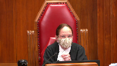
So how much room is there for us to experiment with quantification by adding other kinds of compensation, like proprietary interests or something like, for example, revenue sharing?
What scope is there, and does that change the way we have always looked at breaches for fiduciary duties?
Speaker 6 (01:29:33): A good question.
The quantification, and maybe I’ve misunderstood the question, but the quantification, I think, has to take into account these other aspects that are unique to Aboriginal peoples.
Overlapping speakers (01:29:49): But it’s an amount.
I’m just getting it, but it ends up being an amount.
Is that right?
Speaker 6 (01:29:54): Well, sorry, I am presuming that we’re talking here about compensation.
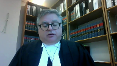
There are other ways in which you could seek to redress losses, but in the courtroom where compensation is sought, I’m saying that these are avenues you can take.
Outside of court, and if we wanted to have a debate or discussion about how to compensate First Nations outside of the quantification amount, like outside of calculation of loss, then yes, I think it’s a different debate than quantification.
Overlapping speakers (01:30:35): Thank you.
Yeah, I’m sorry for not being clear on that.
No, no, thank you.
No, no, no, no, no, no, no, no, no, no, no, no, no, no, no, no, no, no, no, no, no, no, no, no, no, no, no, no, no, no, no, no, no, no, no, no, no, no, no, no, no, no, no, no, no, no, no, no, no, no, no, no, no, no, no, no, no, no, no, no, no, no, no, no, no, no, no, no, no, no, no, no, no, no, no, no, no, no, no, no, no, no, no, no, no, no, no, no, no, no, no, no, no, no, no, no, no, no, no, no, no, no, no, no, no, no, no, no, no, no, no, no
Justice Wagner (01:30:39): Thank you very much, Ms. Westerwey.
Speaker 6 (01:30:39): Thank you very much.
Speaker 7 (01:30:51): of the Anishinaabeg Nation, representing 39 member nations.
The oldest political organization in Ontario and can trace its roots back to the confederacy of the Three Fires, which existed long before European contact.
The Anishinaabeg Nation intervenes today to ensure the guidance this court gives on equitable compensation will safeguard also substantive equality and does not continue to perpetuate systemic disadvantage and helps us maintain coherence in the law.
We say that it’s critical for the courts to fully apply the equitable presumption of the most advantageous use and with the benefit of hindsight.
Only an award that properly applies this presumption, as Council has already argued, will be able to respect as well the honor of the Crown and we say protect our minorities.
This approach aligns with the First Nation rights jurisprudence that we have already and the right to redress for dispossession of lands and resources from our international case law.
We ask this court to choose the option that maintains this coherence with the Constitution, the Charter and the Declaration.
In the context of compensation for fiduciary breaches, the court may ask why must this legal analysis include our Constitution, the Charter and these legal principles.
At its most basic, we say this is absolutely critical in the context of First Nations to maintain coherence with our Canadian legal system as it specifically relates to Indigenous peoples.
This court has held that all legislation and judge-made law must align with the core precepts of our system.
Equitable remedies cannot be an exception, an outlier.
Valuing the lands on the basis of their bare value, their assumed bare value, does not respect the equitable requirements and it cannot protect minorities and it does not uphold the honor of the Crown in this case.
Canadian courts are the guardians of the Constitution.
It’s imperative they heed the warning of this court that you provided in succession reference at page 74.
Although democratic governments are generally solicitous of those rights, there are occasions where the majority will be tempted to ignore fundamental rights in order to accomplish collective goals more easily and effectively.
With great respect, this is one of those cases.
The flooding of the First Nation lands, while easier for the majority, better for the for the Crown, failed to protect this minority.
Contrary to Canada’s position that Charter values are outside somehow, the scope of this appeal, Charter values are always applicable to all legislative and judge-made law as set out in as far back as Dolphin Delivery and before.
It must be developed in accordance with Charter values.
We see prejudice and systemic discrimination certainly in 29 continue now, today, where Crown expropriation is not compensated fully and without the benefit of hindsight.
This would offend section 15.
The law of equitable compensation already requires the most advantageous use.
In short, we ask that where a court must decide between competing valuations, and that is the question today, the courts must be guided to prefer the higher value that aligns with Canadian constitutional and Charter values.
We can never restore to these nations the full value that a non-Indigenous beneficiary might have today, but we can at least give them the highest and full and best use with the benefit of hindsight and properly apply equitable principles to align with our section 35, our international obligations, as well as our Charter values.
We have generations of section 15 and 35 jurisprudence from this court, and we ask this court to say it clearly here for our lower courts, for our tribunals, and for all parties to clarify the law and remissate the primordial nature of the coherence in the law on this point.
We require an application that prefers and reflects international laws, as my colleague Kate Kempton has already raised.
You know, Canada has already undertaken to provide a full box of rights in section 35.
As recently as last week, they have promulgated and started the first readings of the bill that talk about UNDRIP and fully implementing it in our legislation.
I might draw this court’s attention to clause 5 as an example at tab 10 of my condensed books, where it says the government of Canada must, in consultation and cooperation with Indigenous peoples, take all measures necessary to ensure that the laws of Canada are consistent with the declaration.
There’s no doubt that these key principles have to inform how we look at equitable compensation when we’re dealing with First Nation beneficiaries.
In closing, I just ask this court to give that guidance to all of us, to guide the development of the area of this law in a way that directs all parties and courts to maintain coherence among equitable compensation principles which must apply to provide the highest and best use, the most advantageous valuations in order to maintain coherence among equitable compensation principles, charter values, constitutional principles, and of course our international legal norms.
Justice Wagner (01:36:19): Thank you very much.
Speaker 8 (01:36:26): What, sorry, justices, as bad as it was for the band, the Laxall Storage Project presented the band with an enormous opportunity.
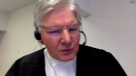
Those lands, its reserve lands, were suddenly indispensable to the electrification of Winnipeg, a nation-building imperative for the settlement and development of Western Canada.
In the late 1920s, hydroelectric power was the energy of the future.
And since Canada was both the proponent of the project and the band’s fiduciary, it had all the necessary leverage to make the band an active participant in this new economy, not just a passive victim.
But even though the flooding destroyed much of the band’s traditional economy, Canada continues to submit in this court that it had no fiduciary duty to get the band to stake in the new economy.
This just wasn’t something Canada did in 1929.
There was something else Canada just didn’t do in 1929, or at least certainly wasn’t supposed to do in 1929, and that was to simply allow reserve lands to be used for a purpose that had not been authorized under the Indian Act.
In Garin, Justice Wilson explained how to determine Canada’s liability for allowing the unauthorized use of reserve lands, not unauthorized taking, unauthorized use.
Drawing on preexisting fiduciary law, she held that equitable compensation for this breach was to be assessed at trial with the benefit of hindsight so that any increases in the value of the asset during that period, the period of unauthorized use, could be measured on the presumption of the most advantageous use throughout that period.
Garin is the controlling authority in this case because it answers the question that has been raised already several times.
What was the breach here?
Was it that Canada failed to properly compensate the band in 1929, and you just bring forward that amount?
Garin says, no, the breach here was allowing unauthorized use of reserve lands, not the taking of reserve lands, but the unauthorized use of those lands.
Moreover, Garin sets out the remedy, which has nothing to do with what Canada should have done in 1929 to answer Justice Karakatsanis’ question.
It does use hindsight, but only not to guess about what would have happened in 1929, but to determine how much the value of the asset may have increased during the period of unauthorized use.
Canada’s expropriation scenario did not satisfy any of the requirements of Garin, but the evidence at trial did overwhelmingly demonstrate that the most advantageous use of the reserve lands during the period of unauthorized use was their actual use to generate hydroelectric power.
That was certainly how Canada viewed the value of the lands.
But this evidence was of little interest to the lower courts because they decided to accept Canada’s expropriation scenario.
I call it a scenario because it’s fiction.
This scenario wasn’t just contrary to Garin.
It was also contrary to the specific requirements applicable to the expropriation of reserve lands as set out by this court in Assoyes.
First, as the majority explained, the value of reserve lands could not be fairly assessed in the same way as non-Indian lands as Canada’s expropriation scenario assumed.
Excuse me, sir.
Justice Wagner (01:39:50): I’m sorry to interrupt you, but you’re arguing on the merits of the case.
And I don’t know why you’re doing that.
Overlapping speakers (01:40:00): I’m not allowed to do that?
Justice Wagner (01:40:01): No, not at all.
It’s been constant jurisprudence from this court for many, many, many years.
Speaker 8 (01:40:10): Well, I’m answering questions of the court.
Can I not do that?
Justice Wagner (01:40:14): So I would ask you to conclude, please.
Speaker 8 (01:40:18): Well, I’ll just conclude by pointing to emergency skin.
This is a case cited in my factum, which talks about the duty to invest, an asset which is held by the Crown in trust.
There is a duty to invest.
It was stated in emergency skin to be applicable and as the way a common law trustee would have the duty to invest, unless there was some legislation removing that duty, and there was no such legislation.
I will conclude with this statement.
As Justice Collier, the trial judge in Garron said, and it was quoted with approval by Justice Wilson in the Supreme Court, it was their land, I’m quoting now, it was their land, it was their potential investment and revenue.
It was their future.
Thank you, those are my thoughts.
Thank you.
Justice Wagner (01:41:01): Mr. Colborne.
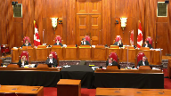
Speaker 9 (01:41:41): G’day Chief Justice, Justices.
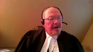
The interveners I represent are four First Nations located southwest of Laxsul whose land was flooded but by a different dam.
These were all interrelated hydroelectric projects in the same watershed.
We wish to emphasize today what we assert is a palpable and overriding error of the trial judge.
This error was not affected by the appeal decision.
The specifics of course are in our factum but briefly the trial judge did correctly set out
Justice Wagner (01:42:29): Excuse me sir, I don’t know if you heard what I just said to your colleague just a minute ago.
Interveners should never tackle the merits of the case.
The parties are unable to do that, not the interveners.
Speaker 9 (01:42:47): Thank you, Chief Justice.
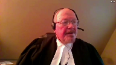
If I could advance then to another matter which I wish to bring to the Court’s attention.
In the present day, First Nations with land that was flooded in these interrelated projects are in a position to negotiate for fair compensation in large part based on the fact that their land was never expropriated.
They can seek fair compensation based on their actual losses, not bear formulations from expropriation law applied to facts existent many decades ago.
This opportunity to negotiate will be undermined if the valuation approach used below is the one affirmed by this Court.
An additional matter that I would like to emphasize is that today First Nations have access to the Specific Claims Tribunal where compensation can be assessed according to a statutory approach that includes past loss of use and is therefore not consistent with the approach used in this case.
And it is undesirable, I submit, to have two different models for valuing the same injuries, one to be applied by the Specific Claims Tribunal and a different one to be applied by the Courts.
Justice Rowe (01:44:17): Sir, is not the specific claims tribunal established under a very specific statutory framework and called upon to apply specific rules?
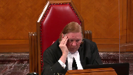
And if that is the case, how does that cause us to change because we are not within that framework and we are not called upon to apply those rules?
Speaker 9 (01:44:41): I don’t disagree with that observation.
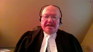
My submission was that it is undesirable, not that it is unlawful.
So I suppose I’m partially agreeing with your correction.
Justice Karakatsanis (01:45:01): I guess I would be asking you as well.
I mean, I think the act has a monetary cap, doesn’t have punitive damages.
They have a number of features that are inconsistent with equitable compensation.
So I’m having some trouble with your submission that they should be consistent in some way.
Speaker 9 (01:45:23): The aspect in which they are, or there are several aspects in which they’re inconsistent.
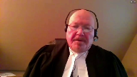
One of them being how to value loss of use from the time of the loss to the present day.
And that is the aspect that I am addressing that it is undesirable for there to be two different approaches in that respect.
The other valuation material in the statute is not necessarily something that I am advocating be adopted.
So I suppose that’s only a partial answer to your question.
I am not suggesting however, that they have to be identical, but that the differences between them should be less rather than more.
Overlapping speakers (01:46:35): All right, those are my.
Justice Wagner (01:46:35): submissions.
Thank you very much.
Peter Millard.
Speaker 10 (01:46:41): Chief Justice, Justices, this intervener is a coalition of the Union of BC Indian Chiefs, the William Slick First Nation, and the Penticton Indian Band, each of which has for decades fought for fair redress for historical breaches of the Crown’s fiduciary duty under Canada’s Specific Claims Policy and the Specific Claims Tribunal Act.
For this coalition, this appeal presents an opportunity for the Court to grapple with how the principles of equitable compensation need to evolve in order to advance reconciliation.
In the coalition submission, the approach to the assessment of compensation for breach of fiduciary duty in the Crown-Indigenous relationship should be guided by four principles.
First, the right approach must be sensitive to the context of the Crown-Indigenous relationship.
In Canson, Justice McLaughlin said that courts should look to the policy behind compensation for breach of fiduciary duty and determine what remedies will best further that policy.
In the context of remedies for historical breaches in the Crown-Indigenous relationship, the most important policy behind compensation is the imperative of reconciliation.
The second principle is that the right approach must be informed by the Indigenous perspective.
A first step of reconciliation is truth-telling about the past, which must include the perspective of the Indigenous people who experienced the events.
Reconciliation will not be achieved if this Court upholds a compensation approach that denies the wrongs of the past or assesses compensation for those wrongs solely from the perspective of the Crown.
The assessment of an Indigenous claimant’s loss and the appropriate remedy must be informed by the group’s perspective and by their laws where such evidence is available.
Such an approach is consistent with this Court’s guidance and advances reconciliation.
The third principle is that the right approach must avoid unnecessary speculation.
Compensation must not be assessed based on what a fiduciary would have done had it acted lawfully.
This approach is problematic as it puts the truer fact in the difficult position of selecting and weighing numerous possible alternative histories of what would have or should have unfolded as the foundation for compensation.
This is an inherently speculative exercise that is particularly problematic in the context of historical claims where decades have elapsed between the breach and the time of adjudication.
The fourth principle is one that Mr Colburn touched on is that the right approach should at a minimum, we say, provide for compensation consistent with that provided under the specific claims framework.
Under the Specific Claims Tribunal Act, Parliament has provided a framework for the adjudication of Indigenous groups’ historical claims against the Crown in accordance with legal principles.
Both the Specific Claims Tribunal and the Federal Court of Appeal have emphasized the need for consistency and the adjudication of these claims by courts in the Tribunal.
That is not to say that the result should be the same, but that in the approach, the fundamental approach to compensation should be the similar or the same in those two cases to the extent that that’s possible.
If I may offer some concluding comments.
As the Specific Claims Tribunal Act recognizes the purpose of assessing compensation for breach of fiduciary duty in relation to reserve lands, for that purpose, pardon me, there’s an important distinction between an unlawful taking and a lawful but improvident taking of land.
Where there is an unlawful taking, it is not necessary for the court to inquire into what a fiduciary would have done had it acted lawfully.
Rather than speculate as to what could have happened, the court should assess the consequences of the breach based on what actually happened in order to ensure that the beneficiaries made whole today.
Compensation in the case of these unlawful takings or damage should be assessed by reference to loss of use of the lands based on their highest and best use.
Such an approach minimizes speculation, is responsive to the beneficiary’s perspective, is consistent with equitable principles and with the Specific Claims Tribunal Act, and will advance reconciliation.
Those are my submissions.
Thank you very much.
Mr. Morris.
Speaker 19 (01:51:35): Good afternoon.
I represent the Federation of Sovereign Indian Nations.
It’s a body that represents 74 First Nations in Saskatchewan.
Many of those First Nations are still advancing specific claims through that process.
I view this as a very important case.
As we know, the law on Aboriginal and treaty rights is constantly evolving, as are the principles of equitable compensation in those instances when the Crown has been found to have breached its treaty or fiduciary duties to a First Nation.
It’s also an important case in respect of the access to justice.
There are still some 1,000 specific claims by First Nations alleging breaches of the Crown’s obligations in relation to the management of reserve lands, treaty entitlements, Indian monies, and other valuable assets.
Yet there is a paucity of case law dealing with principles of compensation and only a handful of cases like Whitefish Lake and Beardies in which we’ve acted as counsel for those First Nations.
So there’s really a lack of guiding principles and I think that would be most helpful in the grand scheme of things.
So in addition to the systemic barriers that First Nations face in vindicating their rights before the courts, these types of claims prove to be very complex and the cost to prove liability and compensation can be prohibitive because, in large part, because it seems like there’s still a bit of a moving target of what the principles are and what assumptions one might adopt.
For example, would we be required in a typical case involving the taking of reserve land expert appraisals looking at the current replacement value of lands taken illegally?
Should we assume that the use of the land by the expropriation authority should not be taken into account?
Do you look at the lost opportunity and presume that the First Nation would have lacked the capacity to exploit its lands for things like hydro development, mining, crop production, ranching, forestry, or some other commercial use simply because the First Nation’s preference or actual use of its lands was for traditional purposes or some other purpose?
Those types of speculative inquiries, I think, in the grand scheme of things do cause prejudice to First Nations and make it extremely difficult to advance claims in some kind of principled and coherent way.
The Professor Wadhams, which we cite in our brief, sets out, I think, some guiding thoughts, at least in terms of how to address compensation involving the taking of reserve lands.
You would look at principally first the replacement value of the asset or restoration of that asset and specie, but if that’s not available you would look at its replacement value.
You would also look at the value of the lost opportunity or income from the use of that asset or land.
So we have the principle that from Guerin that in equity a presumption is made to the effect that the band would have developed the land in accordance with its most advantageous use or even its highest and best use from a simple standpoint.
Using the benefit of hindsight it is therefore appropriate to consider how the Crown or some third party actually use the land in assessing equitable compensation where we have the benefit of that information.
I also think it’s important to start from a fair assessment of the nature of the breach, whether that’s an illegal taking, a de facto expropriation, mismanagement of lands or monies.
While I accept the premise that no right is absolute in Canada, there still must be some attempt to reconcile the Crown’s power with the protection of reserve lands.
Where lands are taken unlawfully it is important to assess equitable compensations in a way that meet the underlying objectives of deterrence and enforcement of the trust that lies at the heart of that fiduciary relationship.
Overlapping speakers (01:56:04): Thank you very much.
Speaker 19 (01:56:06): Lastly, I would just mention that in cases involving expropriations, if the Crown wishes to exercise its right of eminent domain for a valid and bona fide public purpose, it can do so, but it must comply with the requirements of the expropriating statute.
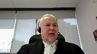
If it fails to do so, compensation should be based on equitable principles, which do not foreclose an entitlement to a rent for the use of land that is used by a third party.
Justice Wagner (01:56:35): Thank you very much, Mr. Kerry.
Speaker 12 (01:56:43): Good afternoon, Chief Justice, Justices.
My name is Stephen Carey and I represent the Intervener Atikamekshing Anishinabek in these proceedings.
Atikamekshing Anishinabek was formerly known as the Whitefish Lake Band.
My client was the claimant in the appellant in the action which culminated in the 2007 decision of the Ontario Court of Appeal and Whitefish Lake Band of Indians and Attorney General Canada.
Now that decision is figured prominently in the equitable compensation analysis in both the Southwind decisions as well as in Huiat and Beardies.
My submissions today focus on the role of realistic contingencies in the assessment of equitable compensation where a First Nation has made it a breach of the Crown’s fiduciary duty.
We submit that the term realistic contingencies in Garan was used to describe a process whereby in the absence of actual data historical losses are assessed objectively as the foregone income that would have been reasonably generated by an unlawfully converted or withheld asset had it been put to its highest and best use.
By necessity this assessment requires the trier effect to make certain assumptions regarding the income earning potential of the asset in issue over the claim period.
Now this process is guided by the equitable principles that the asset is presumed to have been put to its highest and best use and it is guided with the full benefit of hindsight.
In most if not all the cases applying these presumptions will result in an increase in damages.
Left untethered this could arguably lead to a disproportionate order of damages that goes beyond putting the claimant that would be in the position the claimant would be in but for the breach.
For example in Garan Justice Collier determined that the highest and best use of the claimed lands was residential development.
In assessing damages however Justice Collier acknowledged that had the breach not occurred it would have been unrealistic to assume the lands could be developed for residential purposes immediately from the time of the unlawful surrender.
In Garan then realistic contingencies are those factors which are inherent to assessing the income earning potential of the unlawfully converted asset to determine the First Nation’s annual loss accruing from the time of the surrender.
It’s a reasonableness standard which ensures that applying the presumption of highest and best use with full benefit of hindsight that the resulting award of equitable compensation does not become disproportionate.
In Garan this was an objective assessment of market conditions and the location and quality of the lands.
Notably there is no subjective consideration of the economic wherewithal of the must we embed nor is there any speculation as to the likelihood of whether or when the musqueam band would have taken steps to develop the lands for residential purposes.
There is also no consideration of the band’s spending patterns or any suggestion that an award of equitable compensation must be reduced to account for dissipation or consumption.
The Whitefish Lake decision is the first time that the term realistic contingencies is mentioned in connection with the subjective analysis of dissipation or spending patterns of the claim in First Nation.
The relevant passage is found in paragraphs 101 through 104 of the Court of Appeals Reasons where the court purporting to applying Garan stated that once objective losses are determined that there is an additional step whereby these objective losses must now be reduced or discounted to reflect realistic contingencies.
In so doing they’ve created a new definition for this term that departs in our submission considerably from Garan.
Notwithstanding that these comments were made an obiter, Whitefish-style realistic contingencies have since become the focus in the party submissions in Huillat, Beardies, and in the Southwind decisions.
In each of these cases it was argued that once the income generating potential of the unlawfully converted asset is determined that there’s an additional step where in looking to the First Nation’s spending patterns that objective assessment is then reduced to account for those spending patterns or dissipation or consumption.
Atikamekching Anishinabek submits that this additional step in assessing equitable compensation is contrary to Garan and to the fundamental principles of equitable compensation, specifically that equity favors the interest of the wrong party over those the defaulting fiduciary.
An award of equitable compensation is intended to restore the injured parties to the position it would be in but for the breach.
The approach proposed in Whitefish Lake seeks to determine the award that would accomplish this objective and then to reduce it based on spending patterns.
Now this has the perverse effect of allowing the defaulting fiduciary to realize a compounding benefit from its unlawful conduct.
It is well established that a poorer party cannot afford to save as much money.
So the actual breach which causes the claimant to be poor then serves to exaggerate its need to spend which then exaggerates the effect of reducing an objectively determined loss for realistic contingencies according to Whitefish.
So in summary Atikamekching Anishinabek submits that in revisiting the issue of how equitable compensation is assessed the role of realistic contingencies should be restored as a reasonableness standard as set out in Garan and that the additional discounting phase of the analysis that was arguably suggested by Whitefish should be rejected.
Thank you.
Justice Wagner (02:01:21): Thank you very much, Tim Dixon.
Speaker 19 (02:01:26): Chief Justice, Justices, I appear on behalf of Kwantlen First Nation, and I’m going to focus on two of the issues we deal with in our Factum.
The first concerns the nature and importance of the Crown’s fiduciary duty to Indigenous peoples, and the second is the primary place that deterrence must play in fashioning the appropriate remedy.
It’s important to consider the nature and importance of the Crown’s fiduciary duty in part because of the debate in Canson and Hodgkinson about whether some of the equitable rules for fiduciary remedies should be displaced in favour of the common law rules applicable to remedies for contract and tort.
And those equitable rules include the role of causation and the most advantageous use presumption that Ms. Kyle has spoken of.
I urge you to resist conflating the Crown’s fiduciary duty to Indigenous peoples with contract or tort.
The duty bears no resemblance to those kinds of obligations, and I’d like to give you three points on that.
The first is that, unlike with contract, the duty here arises from unilateral actions on the part of the Crown.
First, its assertion of sovereignty over Indigenous peoples and their lands, and then many other actions, including, of course, enacting the Indian Act.
Because of those actions, the vulnerability that is the hallmark of fiduciary relationships is very much present.
The second point is that, unlike with tort in particular, the Crown’s fiduciary duty has here a foundation in public law, as it’s grounded in the honour of the Crown, a constitutional principle.
And last, the Crown’s fiduciary relationship with Indigenous peoples is of overarching importance in this country.
That’s how the Ontario Court of Appeal described it in Whitefish.
But whatever words are used to describe it, the duty is clearly vital to the project of reconciliation that’s the purpose of Section 35.
So the Crown’s fiduciary duty is highly distinct from contract and tort, and the remedies for breach of the duty should be grounded in equitable principles.
One of those equitable principles is the focus on deterrence.
And this Court’s key case law affirms that deterring fiduciaries is a remedial objective that’s at least as important as compensation for the beneficiary.
In order to achieve deterrence, the primary concern of equity is to remove any benefit gained by the fiduciary and restore it to the beneficiary through disgorgement, or constructive trust, or count of profits, or indeed equitable compensation.
In those cases, it’s not about the beneficiary receiving some sort of windfall.
It’s rather about the need to remove wrongful gains from the fiduciary in order to keep them up to their duty.
That primary concern for deterrence must be carried through to the remedies for the Crown’s breach of its fiduciary duty to Indigenous peoples.
And I want to make two points on that.
First, when the Crown breaches its fiduciary duty, the loss is not just experienced by the Indigenous group to whom the duty is immediately owed.
The loss is broader as well, because the breach erodes confidence in the honour of the Crown.
It reduces faith that the Crown will put Indigenous interests first when a fiduciary duty arises and not allow them to be subsumed by economic pressures.
The remedy for the breach must therefore not only compensate the Indigenous plaintiff group, it must also restore confidence more generally in the reconciliation project by providing an effective deterrent against the Crown breaching in the future.
The second point is that the need for deterrence is particularly acute where the breach of fiduciary duty is in respect of Indigenous peoples’ lands.
Those lands are, of course, of enormous cultural, spiritual, and economic importance.
But of course, part of the story of Canada has been the stripping away of land from Indigenous peoples for the use and benefit of others, to the point where south of the 60th parallel, the lands left in Indigenous hands comprise a tiny fraction of the landmass, one half of one percent.
And this isn’t just a historical phenomenon.
The pressure on the Crown to encroach on Indigenous lands for economic development, of course, continues.
And indeed, that’s part of the challenge in the reconciliation project.
The Crown is obliged to act in the Indigenous nation’s best interests, and yet the Crown is also concerned for developing the land to support economic and other activities.
The law’s solution is to interpose the fiduciary duty between the Crown and outside pressure so that we can be confident that the Crown will honourably advance the Indigenous group’s interests.
But for that to work, the cost to the Crown of breaching the duty must be a real deterrent.
Thank you very much.
Thank you, Chief Justice.
Justice Wagner (02:06:37): The court will break for lunch.
We’ll be back in half an hour, 1.30, Ottawa time.
Bon appétit.
Justice Rowe (02:07:32): The court, like cool.
Justice Wagner (02:07:56): Thank you.
Please be seated.
Speaker 14 (02:08:04): Yes, good afternoon Chief Justice and Justices.
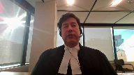
Before I like start, I’d like to acknowledge that we’re on the traditional territory of the Konkuk Nation.
I’m appearing on behalf of the Assembly First Nations, the intervener.
The AFN represents over 634 First Nation communities who have treaties, inherent rights, and title in their traditional territories.
This case involves the unlawful flooding of over 11,000 acres of Lac Sol First Nation’s reserve land for a hydroelectric project in 1929.
Lac Sol First Nation is a party to treaty number three.
The AFN submits a signatory to a treaty differentiates a First Nation from other individuals or landowners across Canada.
Promises and obligations were made to First Nations so long as there were sunshines and waters flow.
The AFN submits that at its core, the issues before this court is the application of equitable principles to determine the appropriate compensation due to First Nations in such matters.
Of particular interest to the Assembly First Nations is that this court provides clear directions on the courts below on the proper principles to use in determining equitable compensation.
This case is not an anomaly.
There are numerous breaches of fiduciary duties in the past.
Arguably, some breaches are occurring today.
First Nations require a fair and just mechanism for redressing significant harms to First Nations arising as a result of Canada’s unlawful actions or breaches of its legal obligations and duties.
This would include deterrence to ensure such conduct does not continue in the future.
Equitable compensation is equity’s counterpart to common law damages.
Equitable compensation requires more than a minimal value be placed on the loss of lands and more than what would be provided in the taking up of lands.
In fact, it should reflect the land’s highest value.
Equity includes compensation, the restoration of the plaintiff to the position that a plaintiff would have had the fiduciary not breached its duty.
In Canson, it was also critically served to deter fiduciaries from abusing their powers.
Equitable compensation furthers the objectives of enforcement and deterrence and must emphasize the Crown’s ongoing obligation to honour its fiduciary duty and a need to deter future breaches.
This places on the onus on the courts to presume the most advantageous use of deprived assets in favor of the grieved party.
In Canson, the maxims of equity should be flexibly adapted to serve the ends of justice as perceived in our days.
There are not rules that must be rigorously applied, but maleable principles intended to serve the ends of fairness and justice.
The AFN submits the deterrence is a required aspect of equitable compensation.
Breaches in Canada’s fiduciary duties of First Nations must be strenuously deterred, particularly in light of the constitutional nature of the said duties and given the power imbalance between the Crown and First Nations in respect of reserves.
As addressed by this court in Vanderpete, equitable principles that compensation should be given a general liberal interpretation that any doubts of ambiguity associated therewith should be resolved in favor of First Nations.
The AFN submits that vindication can be an important consideration associated with breaches of fiduciary duties.
It focus on the harm of the breach caused to First Nations as violations of constitutionally protected rights harm society as a whole, but they also impair public confidence and diminish public faith in the efficacy of the constitutional protections they have.
The Crown’s violation of constitutional derived fiduciary duties is owed to the Laxalt First Nations and other First Nations, not only harms First Nations, but also First Nations-Crown relationships as a whole.
They impair First Nations’ confidence in the nation-nation relationship and diminish First Nations’ faith and efficacy of Section 35 protections.
The AFN requests that this court provide First Nations with an effective remedies where First Nations and treaty beneficiaries are involved.
Awards must be appropriate and just, not only from the perspective of Canada, but from First Nations as well.
This includes acknowledging the unique nature of their losses and First Nations relationships, other lands, and in light of this, also the cultural importance First Nations place on the lands.
Those are the submissions of the Assembly First Nations.
Thank you very much.
Thank you.
Justice Wagner (02:12:41): Maître Benoît Hamiot.
Speaker 15 (02:12:45): Oui, bonjour M. le juge en chef, bonjour M. et Mesdames les juges.
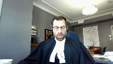
Alors, j’agis pour l’Assemblée des Premières Nations Québec Labrador, laquelle a pour mission de promouvoir et défendre les intérêts de ses membres, soit 43 conseils de bande, dont plusieurs communautés qui ont subi des prises de possession de terres illégales.
Ces prises de possession de terres illégales doivent être distinguées des cas d’expropriation.
On ne doit pas se limiter à rechercher une indemnité pour une expropriation.
Encore aujourd’hui, ces terres font toujours l’objet d’empiedement.
Elles n’ont pas été expropriées.
Alors, afin d’évaluer la compensation dans de semblables matières, nous comprenons qu’il est utile de se reporter aux outils, aux scénarios qui étaient possibles à l’époque du manquement pour évaluer les possibilités.
La juge Côté a d’ailleurs référé ce matin à l’article 48 de la Loi sur les Indiens de l’époque, qui permet la prise de terres et qui réfère aux méthodes d’expropriation provinciales ou municipales.
Il est important de rappeler que l’expropriation constitue le pire scénario dans le cadre d’une relation fondée sur l’honneur de la couronne, dans le cadre d’une relation fondée sur des objectifs de réconciliation.
Dans l’affaire Semiamu de la Cour d’appel fédérale, il a été mentionné que la couronne avait le devoir d’apaiser le sentiment d’impuissance des Premières Nations face à une telle expropriation.
Donc, nous vous soumettons que nous ne pouvons présumer que l’utilisation d’un scénario d’expropriation aurait été le cas, mais on doit plutôt se questionner et rechercher le scénario où la Première Nation aurait été dûment consultée, où elle aurait pu donner son point de vue et aurait pu consentir de façon éclairée.
Par ailleurs, si on considère tout de même l’utilisation de l’article 48 de la Loi sur les Indiens et la prise de terre sans le consentement de la Première Nation, on doit considérer qu’un tel pouvoir aurait été exécuté en respect des obligations fiducières de la couronne.
Malgré que l’article 48 fasse référence aux règles provinciales et municipales applicables en matière d’expropriation, ces règles sont applicables à défaut.
Elles n’ont pas pour effet de faire disparaître les obligations fiducières de la couronne.
Et ce pouvoir doit être exercé en deux temps tels qu’il fut rappelé dans l’addition au suyos.
Donc, après que la couronne ait déterminé l’intérêt public, elle doit, conformément à l’article 48.2 de la Loi, déterminer les termes et conditions de la prise de terre et fixer une indemnité, le tout dans l’intérêt de la Première Nation.
Cet exercice doit se faire après une consultation de la bande, après avoir entendu son point de vue et dans la recherche des intérêts de celle-ci.
Dans le cadre de cet exercice, la couronne a également le devoir non seulement de protéger les intérêts, mais également de protéger le pouvoir de négociation de la bande.
Alors, dans ce type de cas, la couronne peut, et je dirais même a l’obligation fiduciaire, de protéger le pouvoir de négociation, notamment en interdisant et en mettant fin à tout empiétement sur les terres de réserve tant et aussi longtemps qu’une entente ou qu’un pouvoir légal n’est pas exercé.
Maintenant, concernant les règles d’expropriation municipale ou provinciale, je vous soumets qu’elles sont inapplicables, non pertinentes dans un contexte de Première Nation.
L’expropriation vise à prendre des terres privées, non pas des terres appartenant à une nation.
Les processus d’expropriation utilisent la valeur marchande comme référence, alors que les terres de réserve ne sont pas dans le marché libre, ne peuvent pas faire l’objet de commerce.
L’expropriation utilise également la valeur actuelle des terres, car l’exproprié est en mesure de se relocaliser.
En matière d’expropriation, comme dans le présent cas, on ne fait pas référence à la valeur future, prenant pour acquis que l’exproprié pourra se relocaliser, ce qui n’est pas le cas pour une Première Nation.
Alors, pour ces raisons, nous vous soumettons que le recours aux règles d’expropriation municipale ou provinciale, même si elles peuvent se faire en respect des dispositions de l’article 48, ne respecte pas les obligations fiduciaires de la Couronne.
Les indemnités lors des prises de terres de réserve doivent être établies en fonction des règles de Common Law fédéral, règles de Common Law qui s’appliquent à l’ensemble des Premières Nations de façon similaire au travers le pays.
Ces règles de Common Law respectent les relations historiques entre les Premières Nations et la Couronne et respectent également le caractère spécial, protégé et inaliénable des terres.
Alors, je vous remercie.
Merci, mate.
Justice Wagner (02:17:42): This is a Kade gun.
Speaker 16 (02:17:51): Good afternoon.
On behalf of the Grand Council Treaty 3, I have two submissions to make on this appeal.
First, the Grand Council submits that on this appeal, this court should clarify as a principle of treaty interpretation, that court must not interpret treaties in a way that would benefit the Crown at the expense of the Indigenous Treaty Parties without first applying the treaty interpretation principles established by this court, and specifically, by looking at the historical record and the perspective of the Indigenous Parties.
We submit that this is critically important because treaties are sacred agreements between the Crown and Indigenous nations.
They are part of the foundation of Canada’s Constitution.
And at all times, they must be interpreted in a way that upholds the integrity of the Crown, and in particular, the Crown’s fiduciary obligations to Indigenous peoples.
If those principles are not applied, courts risk undermining the treaty relationship, the honour of the Crown, and the ultimate objective of reconciliation.
Therefore, on this appeal, we submit that this court should confirm that treaties should not be interpreted in a way that expands the rights of the Crown at the expense of the Indigenous Treaty Parties, without also considering the historical context and the Indigenous Parties’ understanding on the treaty.
On a practical level, if presented with an incomplete evidentiary record, courts should either decline to interpret the treaty, or make no findings of fact regarding the treaty beyond what is strictly necessary to determine the issue before it, and in doing so, clarify in its reasons that the finding should not be applied in future cases regarding the interpretation of the treaty.
The Grand Council’s second submission is that, should this matter be remitted back to trial, that it should be with the directions from this court that the trial judge make no finding that Canada can appropriate reserve lands without First Nations consent based solely on the written text of Treaty 3.
Instead, we submit that the trial judge should be required to require the parties to adduce evidence and to expressly consider the Anishinaabe Treaty Parties’ understanding of the treaty, before making findings which would interpret the treaty.
In the event that this matter is not remitted back to trial, the Grand Council submits that this court should clarify that the trial judge’s findings regarding the interpretation of Treaty 3 and Canada’s right to appropriate reserve lands are not to be applied beyond this specific proceeding.
We submit that the trial judge’s finding in this proceeding on this issue should be limited in its application for the following two reasons.
First, the finding was unnecessary.
Having found that Canada had breached its legal obligations to Lac Soule by failing to obtain a surrender or to expropriate lands under the Indian Act, it was unnecessary for the trial judge to also consider the provisions in Treaty 3.
Second, the trial judge’s finding should be limited on this iter, and third, the trial judge’s finding should be limited on this iter issue, because if allowed to stand and be generally applied, it has the potential to prejudice the rights of other Treaty 3 First Nations and First Nations across Canada by suggesting that Canada can rely on the written English text of the treaty document to justify other unlawful takings of reserve lands.
Therefore, we submit that this court should find that the trial judge’s interpretation of Treaty 3 relied on as a finding of fact beyond this proceeding, and that, in addition, if the court remits this matter back to trial, that it should do so with directions
that the trial judge…
Sorry to interrupt.
Justice Wagner (02:21:41): I’m sorry to interrupt, but again, as I mentioned to you, at least two of your colleagues, you’re now submitting arguments on the merit of the case.
As intervener, you have no right to do that.
Speaker 16 (02:21:56): Thank you, Justice.
Our intention is to provide suggestions to this court regarding the principles of treaty interpretation that would be applied to this case and others and not to comment on the merits of this case.
Thank you very much.
Justice Wagner (02:22:15): Stacey Douglas.
Speaker 17 (02:22:26): Good afternoon, Chief Justice and Justices.
The Mohawk Council of Kahnawake has intervened and raised the history of Mohawk land tenure to illustrate why reliance on a hypothetically valid Indian Act expropriation to assess equitable compensation is inappropriate.
To put our submissions into context, the trial judge had held and the respondent argues at paragraph 70 that Canada, through the exercise of quote, the ordinary diligence required of a fiduciary, would not have been able to negotiate a revenue sharing agreement.
The trial judge further found that there was no evidence that the appellants had any leverage to broker a deal, and that the flooding was inevitable.
By so doing, he implicitly accepted the precept, most notably held in Garan, that the nature of Aboriginal title was usufructory and subject to the Crown’s will and pleasure.
A characterization of Indigenous rights to land as rights of limited nature arose through the interpretation of the legally, morally, and factually wrong application of the Doctrine of Discovery.
A critical reading of this doctrine, the Royal Proclamation, as well as contemporaneous treaties, could have led this court to characterize the Crown’s interest as merely a right of preemption, and the Indigenous interest as a fee simple, subject to a partial restraint on alienation.
Instead, with each implicit reference to Aboriginal land tenure rights as conceived by the Marshall Court in Johnson versus McIntosh, and subsequently adopted in Garan, the diminishment of Indigenous title is further entrenched into Canadian law.
In this case, the diminishment has led to an impoverished formulation of the Crown’s corresponding fiduciary duty in service of the nation’s colonial interests.
The Crown’s Indian Act of Expropriation authority cannot and has not historically been exercised in a manner that respects the obligations of true fiduciaries, including the duty to avoid conflicts of interest and the duty of loyalty.
Moreover, public purpose has historically been synonymous with the nationalist project of settlement, which has unjustly enriched Canada.
At a minimum, the quality of the public purpose and the choice between Indigenous and non-Indigenous land in meeting this purpose must be scrutinized.
Relying on a temporal and fictitious two-hats division is of no help in this case, because the public purpose and Indigenous interests coexisted and were fundamentally opposed.
Establishing compensation based on what the Indian Act permitted, even through implicit reference, further entrenches the injustices stemming from the application of the Doctrine of Discovery and the Indian Act.
Equity is flexible and will not suffer a wrong to be without a remedy.
We agree with the appellant that equity requires the court to presume the most advantageous use of the deprived asset, even if the beneficiary would not have put the asset to that use.
Equity operates on conscience and a racist statute founded on a fiduciary imposed inequality and bargaining power should not stand as an equitable defense.
It is important here to reiterate that the legal source of Aboriginal rights and title is not state recognition, but rather the realities of Indigenous prior occupation, sovereignty, and control.
Rather than an expropriation being inevitable, the only way this project could have proceeded equitably would have been through mutually beneficial agreement.
Furthermore, there is no need to resort to the Indian Act to find the crown could be subject to the standard of fiduciary.
As early as January 1924, the crown had assured the appellants that it would protect their interests in any land transfer.
This undertaking alone triggered the crown’s fiduciary duty.
To achieve restitution and advance reconciliation, we urge this court to update its interpretation of Indigenous land tenure by applying equity to remedy the incoherence of what the Indian Act historically permitted.
From a Mohawk perspective, monetary compensation is a poor substitute for the restitution of land that is taken without consent.
Despite being party to the sacred treaties of Niagara and Aswagacchi, and despite strong opposition from the community, the Mohawks of Kahnawake have suffered numerous land takings throughout the late 19th and early 20th centuries.
We submit that remedies must recognize the ongoing Indigenous proprietary interest and connection to land to achieve the objectives of restitution of the value of what was lost and reconciliation.
Without land, there is no place to be Indigenous.
Thank you very much.
Justice Wagner (02:27:19): Thank you.
Alyssa Lombard.
Speaker 18 (02:27:28): Good afternoon Chief Justice, Honourable Justices.
On behalf of Elsibuuk, the First Nation to whom I belong, I bring honour to the Crown and peace for all of us.
In Mi’kmaq, that would be Pejige’e G’etmide’e Ram’eg Elegawot’i Pegisiro’e G’wantagawot’i because perspective matters and language is perspective.
The central issue in this appeal relates to equitable compensation for harms caused by Canada’s fiduciary breaches.
Elsibuuk submits this should be approached by upholding the rule of law in a manner consistent with the governing ethos of reconciliation.
The Specific Claims Tribunal Act entrenches the compensation principles at issue in this appeal.
The Act reflects the will of Parliament and is an historic joint effort between First Nations and the Crown, achieved after almost 40 years of conflict and negotiation for a fair, independent, adjudicative body.
Elsibuuk submits that the compensation scheme of the Act must be considered by this Honourable Court in this appeal, keeping its importance as a reflection of compensation principles accepted and endorsed by First Nations and Parliament.
The Act provides that the Tribunal is to apply open quote principles of compensation applied by the courts, end quote.
It also establishes that breaches of different natures attract different compensation formulas set out in the Act.
The starkest distinction between deferring breaches is whether lands were taken legally or illegally, or without legal authority or used illegally.
The nature of the breach is central to the assessment of compensation and equity.
In the instant case, the trial decision found that equity calls for compensation based on the value of the lands at the time of the breach, resulting in a calculable loss and then brings that historic value forward to the present.
In the circumstances of a taking without legal authority, as is the case in this appeal, the Act calls for the nominal value to be set using the current unimproved market value of the lands.
Under the Act, loss of use must be awarded where there is a taking without legal authority or an illegal use of reserved lands.
In some cases, it will be a one-time amount, such as in the Beardies case, or a calculable loss based on, for example, a stompage fee for a timber regulation, and then applied to the annual harvest, such as in Hawaii.
This is often approached using proxy models to assist the court in its assessment.
The hypothetical lawfulness in the trial decision cannot be accommodated by the Act.
Inconsistent decisions are bound to result at the tribunal.
The resulting delay and inevitable judicial reviews would cause significant uncertainty costs and conflict, all of which run fundamentally contrary to the tribunal’s mandate, the party’s intentions in jointly creating the Act, and indeed the will of Parliament.
And no other instrument of law has the perspective of First Nations been so fully taken into account in terms of the actual participation of First Nations in determining the adjudicative principles governing the values of the land, and the adjudicative principles governing the very types of claims at issue in this appeal.
If these two bodies of law, from the courts and under the Act, are at odds, the tribunal will be faced with irreconcilable principles of compensation and equity.
In Williams Lake Indian Band versus Canada, this honourable court has upheld decisions by the tribunal and recognized its nascent specialization as deserving of at least a measure of deference and at least some persuasive value.
Many claimants may be excluded from the tribunal due to many reasons, one of which relates to claim value.
The trial decision may justify a lower valuation of claims by negotiators in the specific claims negotiation process, impacting the valuation of claims to the detriment of First Nations.
Inconsistencies make negotiations harder overall and create conditions that are inappropriate for resolving claims through negotiations, contrary to the tribunal’s mandate.
The risks of failed negotiations are elevated for high value claims such as Elsie Booktuk’s claim, and indeed most claims in the Maritimes.
Claimants in these territories will be further disadvantaged in a process in which they are already disadvantaged by the absence of independent adjudication leading to a fair recovery of proven losses in equity where, for example, the breaches are ongoing.
Failing to align decisions by the courts with the Act’s compensation framework would be bad for Elsie Booktuk and Canada.
The trial decision approach would be detrimental to Elsie Booktuk and the Crown’s efforts to resolve Elsie Booktuk’s claim.
For monetary reasons, yes, but also for reasons related to reconciliation, which our client considers to be very important.
Our client deserves to live peacefully in their lands with its neighbours.
The cloud over title created by the Crown’s legal taking of 46,600 acres of Elsie Booktuk’s reserve lands in 1824 without the ability to negotiate fair and just compensation is a prospect that undermines peaceful coexistence.
Thank you very much.
Justice Wagner (02:32:44): much.
Thank you.
Catherine Boyce Parker.
Speaker 19 (02:32:52): Thank you Chief Justice and thank you for your kind words this morning.
I would like to speak to the appropriate approach to compensation for reserved lands taken for public purposes.
I first want to address the approach that Justice Brown called the appellant’s alternative argument and which is related to Justice Gleeson’s dissent and I’m not sure whether the two approaches are really opposed or whether they’re just looking at the same thing from two different directions.
As has been said, the Crown’s breach of fiduciary duty in the case of an unauthorized taking of land is the failure to protect the First Nation’s interest in the reserved land.
The Crown can fulfill its duty with respect to reserved lands needed for public purposes by negotiating an appropriate arrangement with the First Nation and the appropriate arrangement must be one that protects the Aboriginal interest as much as possible while still having regard to the competing concerns of the public interest.
Now this raises the second question about what interest the Crown is required to protect and I’ll come back to that in a minute but because the appropriate arrangement may include compensation based on the highest and best use such as in this case compensation based on the use of lands for hydroelectric purposes it may not matter whether compensation valued on that basis is seen as a remedy for the taking of land or the remedy for the failure to put in place an appropriate arrangement.
So I want to speak in this regard also to this relationship between the benefit of hindsight and the date of assessment.
So if the Crown and the appellant had negotiated compensation based on highest and best used in 1929 they would have had to try to guess or to estimate what the value of those lands was going to be and then an honorable arrangement would have included payment of those benefits to the First Nation either by estimating in 1929 sort of what the present value of the future uses would have been or by an arrangement that would share revenues over time but with the benefit of hindsight as is available to an appellant like this in equity we don’t need to guess we know what the value is and it includes the value that flowed from the eight generating stations.
So this isn’t really changing the date of assessment it’s just that when we assess the fair 1929 amount we have the benefit of hindsight.
So the question isn’t what the Crown would have negotiated it’s what would have the fair and honorable arrangement meant given the need for the First Nation to receive the appropriate value for their lands and one of the justices it could have been Justice Martin asked about this finding of fact of the trial judge about whether the Crown would have negotiated a revenue sharing agreement if in fact the judge asked himself the wrong question and by phrase it looking at it the wrong way about whether or not it was what they would have actually negotiated rather what was needed to be negotiated then the finding of fact would be based on we would say an inextricable error of law and no deference would be due to it and that would be similar to the Marshall case at paragraph 20 when the judge asked himself the wrong question about the treaty without thinking about what the whole treaty was.
Further to this question of what’s the interest at stake that the Crown was required to protect and do we have to worry about causation it’s important to keep in mind as others have said the special relationship between First Nations and their lands and First Nations and the Crown this court has recognized the special nature of the relationship between First Nations and their land in the Soyuz paragraphs 43 and 46 you recognize that common law property principles may not be helpful.
You know reserve lands are not just real estate they’re the foundation for the continuing existence of a First Nations as a people the relationship with the land anchors First Nations autonomy culture well-being and livelihood the Crown must protect the social cultural and spiritual components of that but also the autonomy to use the land as a platform and driver of economic and growth and development for the community into the future.
These various components are not separate the economic component is is intertwined with the First Nations autonomy and cultural survival.
So just as this court recognized in the Soyuz that when reserved land is taken for a public purpose the Crown’s fiduciary obligation requires you to preserve to the greatest extent possible the First Nations interest in land we say that when you have a remedy for breach of fiduciary duty with respect to land it should be aimed at minimizing the extent that First Nations are deprived of the benefits generated by their lands.
The interest includes their interest in utilizing the benefits of this specific land to sustain their people and there is no windfall if the appellants get the full value of the land as used by the Crown they get what they were promised under the treaty the benefits of the land with which they have a unique and constitutionally significant relationship which grounds their cultural identity and which undermines which underlies the reconciliation
Justice Wagner (02:38:05): Thank you very much.
Justabella has one question for you.
Justice Abella (02:38:08): I just wanted to ask you a question about our scope in or a court scope in fashioning a remedy.
Do we have to find a relationship between the duty that has been breached and a remedy such as for example resource sharing?
Now you seem to suggest that it’s a standalone remedy for an equitable breach period.
Usually it’s to put the parties in a position that they would have been had there been no breach.
So my question to you is how do we combine our approach to equitable remedies and breaches with your conclusion that it could include something like that?
Speaker 19 (02:38:50): I would say that the breach here, the Crown could have fulfilled its fiduciary duty and therefore not breached the duty either by leaving the First Nations alone with respect to the land, in which case they would still obtain all the benefits that they can from the land, or they could have negotiated an arrangement whereby they only took what they needed and left as many benefits as possible with the First Nations.
So if the Crown needs the land for a public purpose, that’s one thing, but they don’t need to take all the economic benefits associated with the land, and it’s that failure, that failure to negotiate or substitute the arrangement that was come to under the treaty that says this shall be your land and you shall have autonomy over it with this is how we are going to use the land and this is what you’re going to get out of it, that should have been one that put them in as good a position as they were in beforehand, at least to the greatest extent it could have.
And it’s that loss that we’re compensating for here, so I would say it would be related to the breach.
Justice Wagner (02:39:52): All right, thank you.
Mr. Mogerman.
Speaker 20 (02:39:58): Chief Justice, Justices, my client is the West Moberly First Nation.
They are a signatory to Treaty 8.
The territory is in northeast British Columbia and many of their central treaty interests are underwater because of flooding of the Peace River watershed for hydroelectric purposes and that is the subject of litigation in British Columbia.
So I have two points that arise out of the factum.
Both are designed to avoid unintended consequences from this court’s decision in this case.
The stepping off for the first is Justice Brown’s comment that Canada can say that the land would have been flooded in any event and that really turns on a question of treaty interpretation that is very much at issue in my case.
So I say nothing about whether that is true in this case.
That is not for me to say.
What I say is that is not necessarily true in other Treaty 8 cases and it is not necessarily true in other Treaty 3 cases or other treaty cases.
And here we had a trial judge who didn’t have extrinsic evidence for the treaty interpretation exercise and indeed didn’t have submissions directed at the treaty interpretation exercise but came to conclusions relating to the interpretation of the treaty.
And my point as an intervener is to make it clear that in my case and in other cases there will be evidence of Indigenous laws of the Indigenous perspective as my my friend Miss Lombard said language, law, perspective matters.
That will be in other cases and so my respectful submission to this court is to take care in how it approaches the treaty interpretation question in this case to ensure that that doesn’t inadvertently spill into another case where we will have the evidence where we will have the facts and where the issue will be more squarely and I would say appropriately joined for resolution.
So that’s my first point as an intervener.
My second point is of this in the same nature and it has to do with this question of whether we have a I’ll call it a sort of hierarchy of interest when we’re talking about reserve lands as opposed to other treaty interests so that the lands in question here arise out of a treaty obligation or a treaty right
and we would respectfully submit we don’t want to create an artificial hierarchy that ties into reserve lands and gives them an artificial place.
Unfortunately if you use British Columbia as an example, historically the First Nations in British Columbia were not given significant reserve lands as part of a misguided assimilation driven policy.
So we had a group of nations who did not get significant reserve lands rather they got broad interests in the use of the land
and so if we want to properly address reconciliation in the future we frame in this case but we leave room for equitable compensation for treaty breaches that aren’t necessarily reserve land treaty breaches and indeed for breaches of aboriginal rights and title that have an inescapable economic content.
So those are my two narrow points as intervener and the I is or the the the job
yes you decide the issues before you in this case
but you keep an eye to treaty breaches not tied to reserve and the in the economic content of aboriginal title and and why do we do that why are we leaving that space.
Justice Abella has asked a question about sort of remedial scope and how far the remedial scope goes and the if the exercise is a just resolution if the exercise is a proper reconciliation this court has played a central role in that fundamental Canadian project.
If you think of a case like Haida Haida succeeded the ground is better after Haida because this court created litigation risk that people could use to enter into negotiations and resolve these cases outside of court and the structure that you put in place in this case will succeed if it has an eye to facilitating those negotiations as was accomplished in Haida as was framed by by Vanderpete.
So I may have taken less than my time or more than my time because I can’t see the clock
but but my fundamental point is be careful about the unintended consequences of this case and secondly a proper reconciliation project with this court as the steward is going to contemplate a broad and the broadest set of possible remedies.
Thank you very much.
Justice Wagner (02:45:19): You’re right on time.
Mr. Rupert.
Speaker 2 (02:45:29): Thank you, Chief Justice, Justice of the Court.
If I could have you have my condensed book handy, I’ll be going to that to some degree.
I’d also like to recognize my colleague, Mr. Roach, who is with me here in Ottawa, and our colleague, Ms. Anderson, who is observing from our Winnipeg office.
You’ve heard a great deal this morning about what this case is about and what it’s not about.
What we have to remember is this was a trial.
It is a matter of, I think, undisputed agreement that the trial judge is bound by the evidence before him.
And the findings of fact made by the trial judge are based on the evidence and his assessment of that evidence.
And that’s really the framework we have to take into account.
We have to remember when dealing with the issues that were raised in this matter.
Canada’s behavior here was inexplicable.
There’s no denying that.
And we’re not suggesting anything otherwise.
Reconciliation calls for an approach to deal with compensation for the inexplicable failure to act in the band’s best interest.
The approach that was taken here was the trial.
I’ll take you to it in a few moments.
We have a number of findings of fact which underpin the decision of the trial judge and indeed underpin a number of the issues that have been raised today.
As this court has been very clear most recently in the Hydro-Québec case, there has to be a finding of a palpable and overriding error with respect to those findings of fact before they can be set aside.
The colorful metaphor used in Hydro-Québec, according to Quebec Court of Appeal, is the beam in the eye.
And what this court has to keep in mind as we go through the next little while with me is, is there a beam in the eye here with what the trial judge did?
Speaker 21 (02:47:55): Sometimes a moat will do.
Sorry, Justice Earl?
Sometimes a moat in the eye will do.
Speaker 2 (02:48:03): But perhaps that’s where we’ll be heading.
My point is, my point is this.
As I understood the submissions this morning, they were that the trial judge erred in law because he did not give the best and the highest use to the land, and the land should have been valued for its use as hydro, as hydro producing power.
And the crux of what the claim was, was that the land, or sorry, that the hydro revenue should have been shared.
And that seems to be put aside.
And why that’s important is because the focus at trial by the plaintiffs, the appellants here and rightfully so the trial judge, was the revenue sharing aspect, which was raised.
The best use, and I’ll take you to this in a moment, the highest and best use as a reservoir was raised in trial, but it was not followed through on.
So, in my submission, it is difficult for any court of appeal, including this court, to say that the trial judge erred in law by not addressing an issue that was not pursued at trial.
They’re pursuing it now because they were unsuccessful in their initial focus, which was the hydro revenue sharing.
And that’s what this comes down to.
This is, well, this is, that’s, sorry.
Justice Brown (02:49:45): Okay.
That’s one way of looking at what it comes down to.
I want to put to you a couple of passages from the trial judgment and I would be grateful to have your submissions on their significance.
Paragraph 290.
I just have to make sure I have the full trial judgment.
I just want to make sure we still had you there.
Speaker 2 (02:50:11): Yeah, sorry.
One of the difficulties of this is I’m in a confined space, so I have to move back and forth to grab things. Oh, no.
No, well, I appreciate your patience with me. 290.
I’m going to get 290.
Justice Brown (02:50:21): And this is after he’s asked himself in a heading what options were available in 1929, which may at least on your opponents, on your adversaries alternative theory be a pretty good question to ask.
But paragraph 290 he asks a slightly different question.
He asks what likely would have happened if the crown had not breached its duty but had carried out its fiduciary duties lawfully.
And then at 295 he gives us a preview of the answer.
Canada had the legal right to appropriate the land required either with the consent of the lake soul first nation or without it.
If one presumes that it would have acted legally, it would have done one or the other.
And if I can tell you what my concern is, that really kind of there was a beam in the eye for me although this may be a question of an error of law.
It makes sense for the trial judge to be speaking about the presumption that the fiduciary would act lawfully.
But I’ve never seen it used in quite this way.
Usually that presumption is used to nullify a causal defence that the fiduciary might advance saying that
well, I still would have bunged it up anyways.
I would have, you know, it wouldn’t have changed the result.
It hasn’t been used as I see it being used here which is effectively to license the fiduciary to do the bare minimum and therefore apply the common law presumption of the lowest cost of performance of obligation as opposed to the equitable presumption that justice Wilson states in garran which is that the band would have wished to develop its land in the most advantageous way possible during the period covered by the unauthorized lease and she says inequity of presumption.
I want to lay that out for you because that is my that’s a central concern that I have with the trial judgment.
Speaker 2 (02:53:00): Right, so let’s look at a couple of things that you’ve raised for Justice Brown and I apologize in advance, there’s a lot packed into your questions.
Overlapping speakers (02:53:07): Yeah, there is, yeah.
Speaker 2 (02:53:08): If I don’t catch everything immediately, come back to me and we’ll deal with it.
Let me deal first with Guerin.
Of course, you’ll remember in Guerin, the band didn’t get what they thought they were going to get.
The trial judge found that they weren’t going to get the amount that they thought they were going to get.
It wasn’t realistic what they were asking for.
So, why I say that is because we have to have a realistic view of what was happening in 1929.
And this, in my submission, is what the trial judge is getting at.
He’s sitting here, and you have to remember, a 55-day trial, thousands of exhibits, three expert historians with hundreds of pages.
He has the full picture that we don’t have here in our hearing today.
So, he has to look at what realistically was going to happen in 1929.
And again, it’s not to say there’s excuses being made.
But what he found was going to happen in 1929 was the project was going to go ahead.
He says this in a couple spots.
First of all, he says it at paragraph 292, just down from there.
So, I’ll just take you to that for a second.
He says, in the case before the court, I conclude a Lac Sol project would have been undertaken.
There is no reasonable likelihood that the project would have been shelved had Lac Sol, Forest Nation, or Indian Affairs refused to have flooded the land.
There’s persuasive evidence before the court that Canada’s Department of Interior in Manitoba were eager to be in the position to supply the city of Winnipeg.
At the last sentence, there is no evidence that either objective was possible at the time or by any means other than the Lac Sol project.
So, he says that’s going ahead.
And if we can just skip, just because this ties in as well.
If I may take you to 318, paragraph 318 of his decision.
And he says this.
He says, although there was a breach by Canada of the duty to fully disclose material facts of Lac Sol, Forest Nation, and to consult with it, it has led to certain workflows in that breach.
As I noted earlier, I find the project would have happened regardless of the views of the members.
Had they been kept fully informed, they would not, in my view, have been able to put an end to the project.
Moreover, having little leverage, there is no evidence from which I can find that there would have been, that they would have been able to strike a better deal than which I discussed later in these reasons.
So, just let me stop there and deal with that.
What we have is a finding fact based upon the evidence that he had before him to say, and he’s not making any other judgement other than to say this project was going ahead.
And unfortunately, because of the times, the band did not have any leverage to negotiate a better deal.
It wasn’t going to happen.
That’s a finding that he made, and I’ve seen no challenge to those findings.
Justice Karakatsanis (02:56:20): I’ll stop you right there because doesn’t that finding embed a problem, a legal problem?
He’s relying on the very inequality of bargaining power, which is the basis for a fiduciary duty.
So I guess I’d like you to comment on that because it seems to me that in determining what would likely have happened, which as Justice Brown says may not be the right way to look at compensation at all, he’s also relying on the fact that they didn’t have the power, which is precisely the basis for a fiduciary duty, which is what imposes the duty on Canada to look out for and deal with that imbalance of power.
So that’s my question.
Speaker 2 (02:57:07): Right.
Now, this tie, I’ll try to tie it back to you, Justice Brown, as well.
But where I’m going with this, Justice Caracassanis, is that I’m not suggesting, and neither is the trial judge in my submission, suggesting that this was the way it should be, that this was appropriate, but it’s the way it was in 1929.
And he then has to say to himself, okay, what is the value of the land in 1929?
Based on my finding, on the evidence I’ve heard, this was going to go ahead.
Regardless of whether I think it should have gone ahead, whether I thought it was fair to go ahead, the evidence before me tells me it was going to go ahead.
So now my next task is I have to value what was lost to the Blacks whole First Nation.
And that’s when it gets into the experts of Bell and Wilson.
Speaker 21 (02:58:00): I know
Justice Rowe (02:58:00): I know you’re trying to juggle all this
but you’re a very capable counsel
so I’m going to do it to you anyway.
Look, at that point you seem to be saying that we have to contemplate that the Crown is going to act willfully against its fiduciary duty, right?
We have to contemplate at that point that the Crown is going to say this is going to go ahead, two bad guys, maybe we could get you a better deal
but we don’t care, as opposed to presuming that their duty was to obtain a fair price in the circumstances at the time.
Speaker 2 (02:58:42): Well, exactly, Justice Roe, and what was a fair price at the time is based on the fair market value of the land at the time, and that’s based on the evidence that was put before the court.
And there’s a couple things we have to keep in mind here as we go through that.
It’s important to remember that the water power site was not on the reserve.
It was 80 kilometers away, which is a significant factor that the judge found.
The other thing we have to remember is that Lac Sol was not the developer of the project, as was the case in Garenne.
So we have some distinguishing factors there.
What I’m saying to you is that the trial judge was put into position of trying to find out what would have happened some 90 years ago when Canada did not fulfill its fiduciary duties.
This is a compensation case, an equitable compensation case, and what the experts dealt with and what the trial was really focused on was how do you determine some 80, 90 years later what is the proper amount of equitable compensation.
And I think what do you think about that?
What do you think about that?
Justice Brown (03:00:01): What do you concede the specific breach was here and let me maybe rephrase that what was the interest that the crown was supposed to protect but did not protect.
Speaker 2 (03:00:21): The base interest, as we look at the case law of Canson, Hodgkinson and the others, is it should have looked out for the best interest of the fiduciary.
Justice Brown (03:00:32): Yes, but that’s pretty vague.
We need to look at the specific interest, do we not, in trying to determine what’s the best approach to remedy.
So what’s the breach here?
Sorry, Justice Brown.
No, no, I’m sorry.
Speaker 2 (03:00:53): or the sound is fading in and out.
I understand what you’re saying.
What’s the specific breach?
Let’s go to see what the trial judge said just that paragraph 226 of his decision.
Cause those are the four duties that he found.
I know you say you had some difficulty with at least one of them, but let’s start there.
So he says that based on his review of the case law over the last, in the historical record, he starts at 219.
So what’s the crown’s duty to lack sole first nation?
He goes through a number of factors and he goes through a number of the cases.
And he says, here’s what I determined the four factors are that they breached.
The duty of loyalty and good faith to lack sole and discharge of the mandate of a trustee of reserve lands, a duty to provide full disclosure and to consult with the bands, a duty to act with ordinary prudence with the view to the best interest of lack sole and a duty to protect and preserve the bands proprietary interest in the reserve from exploitation.
And he takes that from the case law with respect to fiduciary duty.
So he says, here are the four things that I’ve distilled that Canada failed at, he did not do that.
Justice Brown (03:01:58): What did they fail to do?
What are the action words here that we should be employing in describing or in understanding the trial judge’s description of the breach?
Speaker 2 (03:02:08): a couple things right off the bat.
They failed to properly disclose and consult with Laxsul, and that’s what he tells us.
It certainly is that.
The other thing that they failed to do, as he found, is they failed to actually protect and preserve the land.
Overlapping speakers (03:02:28): Why?
What did they not do?
Speaker 2 (03:02:30): Well, what they did not do is they did not, take it a step further, they did not negotiate compensation for the bank.
So that’s the problem.
Justice Brown (03:02:42): So, the fiduciary duty of the Crown here required it to negotiate, let’s just use shorthand, I don’t want these terms to be loaded, but a fair price for what they’re giving up. Sure.
Let’s go with that. Yes.
Speaker 2 (03:02:59): of the idea was to negotiate for Laxsul as the fiduciary a fair price for the land that was going to be taken for the project.
And it’s our submission that the trial that occurred many decades later was precisely to sort that out.
What was the fair price that if Canada had acted properly, if Canada had fulfilled its fiduciary duties and its obligations to the Laxsul First Nation and said we will negotiate and we will get a fair price for you, what would they have come to?
Justice Brown (03:03:38): But that’s not, Mr. Rupar, I’m sorry, that’s not what he’s asking in paragraph 295.
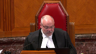
What he’s saying is Canada had the legal right to appropriate the land either with or without the consent.
We presume it would have acted legally.
It would have done one or another.
There’s nothing there about going further than that bare obligation and trying to achieve a fair price for what they’re giving up.
By way of negotiation.
Speaker 2 (03:04:11): Sorry, but you have to read them in tandem, I would suggest to you, Justice Brown.
The duty that was failed by Canada was the duty to negotiate on the behalf of fair price.
What Canada did do, he says, is I have to proceed on the basis that they had the legal right to appropriate the land and that’s the process they would have undertaken and that’s where they would have gone.
He says that’s exactly…
Justice Brown (03:04:36): the error that I wonder about in his kind of, he sort of morphed this equitable presumption that the fiduciary always acts lawfully from what it really is, which is the elimination of that very causal defense, that
oh well, they would have done, they would have done what they did anyways.
Speaker 2 (03:04:59): But he has to find a way to value what was lost.
Overlapping speakers (03:05:07): Right.
Speaker 2 (03:05:07): And so in determining what was lost, he has to say what would have happened.
Canada should have done this, they should have negotiated, they didn’t.
So what would have happened in his finding a fact based on the evidence he had before him?
Justice Brown (03:05:23): That would have happened had they negotiated.
Is that the question, Mr. Rupar, that the trial judge should have asked himself?
Overlapping speakers (03:05:31): But either way- Not one more-
Justice Brown (03:05:32): It would have happened because they didn’t negotiate.
What would have happened had they negotiated?
Speaker 2 (03:05:38): But either way, Justice Brown, in my submission is we get to the same result because then we have to turn.
Overlapping speakers (03:05:42): We’ll never know.
Speaker 2 (03:05:44): the answer, which is second phase, if I may, which is what does the evidence tell us the fair market value was?
And that’s where we get into his assessment of $30 million.
So I agree, you know, to a certain degree, I’m agreeing with you to say, you know, they didn’t follow what they, they didn’t do what they should have done.
And then they tried to say, well, we, you know, we had the power to do it anyways.
And whether we did it legally or not legally, you know, it was going ahead.
The project was going ahead.
So the difficulty the trial judge has before him is to say, okay, this is going to go ahead one way or another.
And I have to sort out the damages.
So I have to find what in 1929 would have been a fair market price for that land.
And if I just add this, this caveat to it, the fair market value of that land at that time is only part of what he did.
Because he also took into account to a great extent the other intangible or incalculable aspects of the land which were lost, the grave sites, the hay fields, the farming.
So before. Sorry.
Justice Karakatsanis (03:07:02): Before you get too far on how he valued it, how he assessed the compensation, I do want to come back to the issue of what exactly was the duty, and more specifically, what was the breach.
The appellant has said that yes, a failure to negotiate settlement based on the best and highest use, which in this case was flooded land for the project, for the hydro project.
So the failure to negotiate, and that’s the breach that you were just discussing with Justice Brown.
But the appellant also asks that there was a breach because of permitting the ongoing use of the land without adequate compensation for the continued, sorry, for the First Nation’s loss of the use and benefit of the land.
And so I wanted you to speak to that breach that the appellant has put to us.
Speaker 2 (03:08:08): Sorry, I will, Jessica or Santa.
You broke up again, unfortunately, but I think I got the gist of your question.
The first one was settlement.
Settlement.
Justice Karakatsanis (03:08:17): based on the highest value of the land as needed for the project.
The second one is permitting the unlawful use of the land which deprived them of the loss of use and benefit of the land.
Speaker 2 (03:08:34): Well, first of all, the issue of highest and best use is one that’ll have to take you to in some detail in a minute because it’s an issue of the highest and best use in relation to the hydro reservoir was raised at trial, but it wasn’t followed through.
So the appellants now say, well, we should have had evaluation of the highest and best use for the hydro land, but that issue was raised at trial and it was not something that they follow through.
So again, it’s hard for me in my submission for court to say to a trial judge, you erred in law by not looking at the highest and best use in relation to the land as a reservoir when it was not an issue that was pursued at trial.
And let me just take you to that while I sort of go ahead.
Justice Karakatsanis (03:09:32): But I just I’m trying to get you off the assessment of what compensation was appropriate and back to what the breach was
Speaker 2 (03:09:40): Well, the breach, as I mentioned earlier, the breach was the failure to act in the best interest of Lac Seul First Nation in the face of what was going to happen, which was the dam was going to be built.
So if you’re a fiduciary and you see that this is happening, and the judge, as I took you to, the judge was clear that this was going to happen, the project was going to go ahead.
The breach that Canada, the fiduciary breach that Canada made, as set out by the trial judge, but in summary, would be failure to act in their best interest.
Overlapping speakers (03:10:17): It’s a question.
Speaker 2 (03:10:18): interest would have been to get the best value for the land that was going to be taken by the project.
Justice Rowe (03:10:24): Good.
Now, that’s an excellent point for me to put my question.
I’m not going to go off on a tangent, but I’m probably the only one in this room who’s negotiated a hydroelectric agreement.
Unfortunately, the project was never built, but we did have an agreement.
One of the absolutely critical factors is the capital cost.
You calculate your revenue stream, you calculate your operating cost, and you calculate your capital cost.
And part of the capital cost is the acquisition of riparian rights, or easements for flow or whatever.
And so whoever was contemplating the construction of these hydroelectric facilities would say, well, how much is it going to cost us to build a dam?
How much is it going to cost us to build a hydro line?
How much is it going to cost us to acquire the rights to flood an area?
And up to a certain point, you say, well, that’s okay.
I’m still going to make, you know, 12% on my investment, and so I’m still in.
But when you get down to like 8% on my investment, you say, no, I’ve got better things to do with my money than put something in for 8%.
And if you’ve got a knowledgeable party negotiating in that context, it’s possible to figure out just how much you can get out of allowing someone to flood your land.
I mean, it takes a little bit of accounting, but it’s only arithmetic.
It’s not calculus or anything.
And none of that happened.
And something akin to that – wait for the question – something akin to that should have happened, and the Government of Canada should have made sure it happened, either by saying we’re not going to let you flood this land unless you pay the ban a certain amount, or we’re going to take it out of the federal treasury and pay the proper amount to the ban because we want to facilitate economic development.
But none of that happened, and for the Crown to say, well, tough luck, because we treated people pretty rough in those days, so you got what you got.
And your argument almost comes down to that, that you didn’t even have to look at what could have been gotten for the value of this.
You just said, well, how much can we get away with paying under some sense of expropriation that doesn’t take that into account?
I find it incomprehensible, just as a matter of law, aside from morality.
Speaker 2 (03:13:15): Well, let me let me take you to a couple points, Justice Rowe.
And Justice Kerr says I will come back to your second question, which I’m quite got to, but I’ll come to that in a second.
If I can take the court to paragraph 213 of the judgment, that’s tab one of my this of my condensed book.
And this is the title here, the subtitle here by the trial judge was claims paid by Canada provinces under the agreement.
Now, this is a separate deal, where Canada made some agreements for other lands that were going to be flooded as well.
I’ll just bring you to a couple points point six and point seven at point six in 1949.
Sorry, 1943.
They paid Canada National Railways $1 per acre for their flooded land.
And they paid Ontario in the same year 1943.
$1 per acre.
So it’s not just as role, if I may, it’s not that they were trying to lowball or go underneath what the going rate was $1 per acre for the land is what other parties got.
And if I can just take you to your point about the flow adjustment.
That’s it starts a paragraph 358 of the judgment, and that’s on a little bit further down.
And so there’s been some talk about the flow flow each flow each easement, and how that comes into play.
And in these paragraphs, starting at 358, just as
Overlapping speakers (03:14:48): Zen.
Speaker 2 (03:14:49): went through in fair detail, the facts before him, the history was that flowy easements were what occurred in these situations.
And so he said, this is what Canada has done before.
This is what other parties have done before.
So that’s a reasonable way to assess what would have been done at that time.
And now you combine that, sorry.
Except the crown didn’t owe the CNR a fiduciary duty.
No, it didn’t.
Justice Kasirer (03:15:21): When you’re saying that as you answered justice brown, the violation here is the crown was required to negotiate a fair price.
It’s a fair price given the nature of the relationship.
Yes and you’re saying that as you answered justice brown, the violation here is the crown was required to negotiate a fair price.
It’s a fair price given the nature of the
Overlapping speakers (03:15:38): And so, so, so.
Justice Kasirer (03:15:39): So to revert to the fair market value for expropriation or comparable transactions doesn’t help us much.
Speaker 2 (03:15:48): Well, it does in the sense, because we have to recall, of course, that the equitable compensation found by Justice Zinn had two parts.
It had, and let’s turn to that, because it’s easier to look at the numbers if we have them in front of us.
Let’s turn to paragraph 512 of his decision, if we may, which is near the end of my tab 1.
And this is after 500 paragraphs of his decision.
He says, here’s what I’m going to assess the equitable compensation at.
And he says, at 511, I assess the plaintiff’s equitable damages at $30 million.
He says, the factors I consider in arriving at that figure include the amount of calculable losses.
Now, I won’t ask you to turn back on this, but he assessed that at $13,800,000, and that’s at paragraph 508.
So of the $30 million, approximately $14 million is calculable.
And Justice Guzzer, in answer to your question, that’s where the fair market value, and that’s where the calculable matters come into play.
So I agree with you that equity demands more than simply saying, especially in a fiduciary situation such as this, to say you just get what everybody else got.
But in respect of what was calculable, Justice Zins said, here’s what I can use to determine that aspect of it.
He then turns to a number of other factors to say that’s not enough.
$14 million clearly was not enough.
In an equitable compensation, given my global review of all the evidence before me and the fact that Canada breaches fiduciary duty, the fact that they didn’t consult with the ban, the fact that the land was flooded and is lost forever, here are the factors I’m going to look at.
I’m going to come up with a value of $30 million.
And let’s look at a couple of these factors he looked at.
He says, for instance, number five, the flooding negatively affected hunting, trapping, requiring members to travel further to engage their pursuits.
Six, although Canada supplied the materials to build replacement houses, members supplied their own labor.
Seven, locks, docks, and outbuildings were not replaced.
Seven, hay fields and rice fields were destroyed.
Nine, hunting and trapping grounds in the reserve were negatively impacted.
He takes a lot of these factors into account that are not necessarily calculable.
And that’s where the role of the trial judge in determining equitable compensation comes into play.
It’s not something you can put on a spreadsheet.
It’s a, and I’ll use Justice Brown’s caution here, I don’t think we want to quote this, but it’s a feel based on the evidence.
It’s knowledge of the trial judge based on 55 days of trial to say, I’ve heard a lot of what’s going on here.
I’ve heard what happened to this ban, to this First Nation 90 years ago.
And here’s where I assess an additional $16 million has to be given for the fact that fiduciary obligations were breached.
Justice Moldaver (03:19:14): That seems to me to be kind of a funny way of getting at the real problem here.
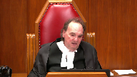
I mean, I would have thought that the problem here is that he had to look at this from the highest and best use, presumptively, and this isn’t a case where there’s any speculation at that point what the highest and best use is is going to be.
It’s known.
This is not, as I say, this is not speculation.
Everybody knows at that point what the highest and best use is, and I don’t see anywhere in here where there’s a discussion about that in terms of assessing the breach of the government, but more importantly, the importance of negotiation and what that may have meant to the band, given the fiduciary duty of the government, to say you’re not just getting the same as Ontario got a dollar an acre.
We have to look at this and take it from the point of view of what’s the highest use and best use of the land, and that’s nowhere in here.
Speaker 2 (03:20:29): Let me answer that two ways, Justice Moldaver.
First of all, where I just took you to, which was the additional $60 million that comes into play in the discretionary decision of the trial judge, is an important factor to deal with what you just mentioned.
But let me also take you back to the question about the $60 million that you mentioned.
Let me take you back to the question about the $60 million that comes into play in the
Justice Moldaver (03:20:47): stop you and because he came to the right result maybe is that what it is even though he even though he didn’t approach it properly he somehow you know came to the right result is that what you’re saying
Speaker 2 (03:20:58): But he did, he did approach you properly.
And if I just have your indulgence for a moment, if I can take you back in the decision to paragraph 82 of his.
Overlapping speakers (03:21:10): of his, of his.
Speaker 2 (03:21:11): decision.
And I’m going to take you to a couple different places here because this ties into the highest and best use theory argument.
Overlapping speakers (03:21:19): paragraph
Speaker 2 (03:21:20): 82, Justice Caracassanis, I believe.
So what we have here, now this is his assessment of the experts.
This is the trial judge’s assessment of the experts.
And he says this, there was a fundamental disagreement in the opinions of the land appraisers, Norris Wilson and Duncan Bell, which rested on their differences in the highest and best use of the acreage of the reserve to be flooded.
For the reasons below, I prefer the evidence of Mr. Bell.
So that’s, he identifies-
Oh, sorry, what is that?
Justice Moldaver (03:21:54): mean?
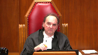
I’m talking about the highest and best use, knowing full well that there’s going to be a hydro project.
Everybody knows, everybody agrees, it seems to me, that that’s a given, except it was never sort of told to the band.
But are you telling me that someone, one of these experts actually assessed this on the basis that this land was going to be much more valuable than just for farming rights or something, given that it was going to be flooded and used for the purposes of generating power?
Did anybody assess it from that point of view?
Speaker 2 (03:22:34): I’m going to take you to this, Justice Muldaver, where it was raised by Mr. Wilson, but it was not followed through by Mr. Wilson.
So it’s not that the issue was not alive to the court.
The reason is because the focus at trial was on the hydro revenue generating claim, not on the highest and best use claim.
The highest and best use claim, let me take you to that right now.
Let’s go to paragraphs, first of all, 331 to 333.
So if the court is with me at paragraph 331, the plaintiffs submit that any approach that ignores the value of the land to the hydroelectric projects is contrary to the law, as it both ignores that equitable compensation is to be determined with the benefit of hindsight and fails to take into account the presumption that a faulty fiduciary must account for the beneficiary on the basis of the most favorable use to the beneficiary.
He hits it.
It was put before him, but there was no evidence.
Justice Moldaver (03:23:45): that’s hindsight.
Who’s talking about hindsight?
I’m talking about what’s on the ground, the reality, right at that point.
Not hindsight.
Speaker 2 (03:23:55): But, Justice Moldaver, what I understood, perhaps I misunderstood what you were saying, is that…
Justice Moldaver (03:24:01): me
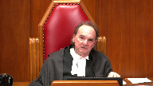
for a moment, hindsight might be you think it’s only good for repairing rights or farming or something and then 20 years later you find out that there’s gold.
That’s hindsight.
This is right on the spot reality.
Everybody knows it.
And frankly it seems to me that this becomes one of the most egregious parts of what the government did which is failing to bring this to the attention of the band when it knew full well what the purpose of this was going to be and effectively prevented them from even having a say in the negotiations.
Speaker 2 (03:24:43): there was no say by the band.

The facts are clear and the findings of fact by the trial judge were clear that way, Justice Moldaver.
But at the end of the day, there still has to be a determination of what equitable compensation will be made of.
And what I was trying to take you to, what I’ve taken you to the court to already is two aspects.
What was calculable based on the evidence that was put before the judge.
He can only go on the evidence he has before him.
And what he had before him with respect to matters that were calculable, I took you to a dollar per acre.
For matters that were non-calculable, I set out where in his judgment, he said, here’s a number of other factors that I have to take into account because the calculable amounts are not sufficient.
Equal compensation calls for more.
But you did.
Justice Brown (03:25:36): But you’ve already agreed, Mr. Rupar, and I’m sorry to pile on, but I think it’s just that kind of day.
Overlapping speakers (03:25:44): Um, sorry.
Justice Brown (03:25:47): But you’ve already agreed that the fiduciary duty of the crown was to negotiate, to do its best to negotiate a fair price for what the First Nation was giving up.
And among those lists of considerations that you drew our attention to a few minutes ago, I didn’t see a negotiation accounted for.
But I want to take you back to the paragraphs you’ve just directed us to, 331, 332, 333.
In paragraph 332, the trial judge says, I agree with the observation of chairman Slade that employing the benefit of hindsight means in this context that the court does not stand as if it was 1929 asked what is reasonably foreseeable, but stands in 2017 and asks what has happened.
In that event, hindsight is unnecessary to know that the land would be used for water storage.
That was already known in 1929.
Everyone seems to agree on that.
In the next paragraph, he says, while both the benefit of hindsight and the presumption of Canada must account to the First Nation on the basis that it is most favourable to it must be observed, their application in this case cannot be such that the First Nation is placed in a better position today than the position it would have been in had Canada observed its duties in 1929.
Now he’s referring, I assume, to the revenue sharing argument that the First Nation is advanced.
He’s rejecting it, but he does note that what’s important is the position it would have been in had Canada observed its duties in 1929.
Then he says, in my view, the position urged upon the court by the plaintiffs would do just that.
My concern is those paragraphs that I initially referred you to at the outset of the hearing suggest that he also didn’t look at the flipside, whether the position urged upon the court by the Crown would get it any closer to the position it would have been in had Canada observed its duties in 1929.
In our exchange, you keep returning to this idea that the judge had to figure out what would have happened.
But I would have thought that the point of equitable presumptions is that the question is not what would have happened, but what should have happened.
And I wonder if that’s the point of departure between us.
Speaker 2 (03:28:16): Well, I don’t think we’re that far apart.
Maybe it’s a perspective.
But what should have happened was there would have been disclosure to the crown or to the First Nation and there would have been input from the First Nation and there would have been a negotiation on behalf of the First Nation with respect to the value of the land.
Justice Brown (03:28:40): And where does the trial judge account for what might have happened in the negotiation?
Speaker 2 (03:28:47): I don’t have a specific site where he says this is where I account for what would have happened in the negotiation, but my submission would be twofold.
One, again, goes back to the overall finding of the additional $16 million because of the breach of the equitable compensation.
The other point I bring you back to, again, Justice Brown, is what I brought to you earlier.
We said the project was going ahead.
The First Nation was not going to be in a position to do better in the negotiation.
Then he’s left with the dilemma of trying to sort out, okay, now what do we determine for compensation for that?
So it all comes back to you have to determine what the fair no matter if the First Nation had been able to negotiate or if in his view there would have been a surrender expropriation model which would have gone through.
Either way the project was happening and there would have had to have been a valuation of the land.
Based on the evidence he had before him he made that valuation of the land.
I know I keep coming back to that, but it’s an equitable compensation case and we have to go back to what the evidence was before the trial judge.
Justice Côté (03:30:08): So we know from the last sentence of paragraph 332 to which Justice Brown referred that everybody knew that the land would be used for water storage and that was known by everybody in 1929.
So what do we have in terms of expert evidence?
I understand
and maybe I’m wrong and you’ll correct me that the focus at trial was on the revenue sharing agreement.
But in terms of assessing the value of the land itself, the fair market value, what did the plaintiff produce in evidence to permit the judge?
Did he have anything coming from the plaintiff to determine the fair market value plus a premium over that fair market value?
Speaker 2 (03:30:53): Well, he does deal with this in some detail, Justice Cote, starting at paragraph 376 of his reasons.
Overlapping speakers (03:30:59): Mm-hmm.
Speaker 2 (03:30:59): where he says he says the value of the flooded land of a flooded reserve land and he says how to value the land and then he gets into and this is where we we touched briefly earlier about uh Mr. Wilson and uh Mr. Mr. Bell and if I these are the two land appraisers that were brought by the parties Mr. Wilson for the plaintiffs Mr. Bell for the crown and if we look at 377 he says this Mr. Norris Wilson the expert called by the plaintiffs criticized Mr. Bell for failing to analyze the effect of the value of the land anticipated improvements whether on or off site because there was a public improvement in the vicinity the subject land with a hydroelectric project at ear falls moreover in his view the flooded reserve land formed part of a storage project that facilitated a hydroelectric system down the English Winnipeg rivers he testified the hydroelectric project at ear falls would affect land value of the land around the foreshore of lake laxle because the heights and best use that land would change the storage of the water from the power project from traditional uses before it was flooded so he that issue was raised by the trial judge but there was no uh there was no effective valuation of it okay
because as I said primarily it’s almost exclusively that the focus was on the revenue generating side of it now I can just take you let’s just if we can just go to uh one other uh part that I want to take you to is 379 and it’s Mr. Wilson he says Mr. Norris
it’s Mr. Wilson
I just he just flipped the names Mr. Wilson stated in his view Mr. Bell’s appraisal was based on unstated assumption that the lands in question were being expropriated across examination he agreed that if one assumes the highest and best use of tradition is traditional use as opposed to land for water power purposes the comparables of Mr. Bell selected for for the direct comparisons are appropriate so he continues as he put it the sales on other lakes in the general area of Northwestern Ontario Mr. Bell identified would be as good as you get in brief Mr. Wilson had little objection to the substance of the appraised value of Mr. Bell provided for the flooded land if they were being valued without reference to the hydroelectric project
Justice Rowe (03:33:31): You get the things like the 16 million dollars because of the loss of livelihood, the 1.9 million dollars for the cost of community infrastructure, the 7.8 million dollars for the loss of timber dues, etc.
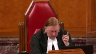
And then we get to the component which Mr. Bell didn’t deal with, which was the cost of the flow achievement easement.
That kind of got left out, didn’t it, for Mr. Bell?
Speaker 2 (03:34:02): Well, except if we look at, if we look at paragraph 505 of the decision, Justice, Justice Roe, there’s an evaluation by the trial judge of $14,582.16 for the flow adjustment payable in 1929, which converted.
That was kind of,
Justice Rowe (03:34:25): calculated on the basis of the use of land by Mr. Bell in other lakes and the like around.
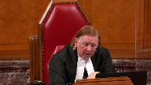
Is it not true that Mr. Bell did not build in to his assessment, to his expert evidence, the value of the flow easement as a contribution of the hydroelectric project?
It was treated as if it was another piece of land along a lake somewhere.
Speaker 2 (03:34:52): Yes, Mr. Bell did not value the land with respect to the hydroelectric reserve potential.
Overlapping speakers (03:35:01): Isn’t that critical?
Speaker 2 (03:35:02): No, it’s not critical, because nobody else in that area was getting a premium for hydroelectric usage.
None of the other parties, and I understand there’s a fiduciary relationship here, I fully understand that, but nobody else was getting that kind of premium for the flooding of the land, particularly when the generating stations were downstream some 80 kilometres away.
There was no evidence before the court that that is what the situation was at that time.
And in the fact that it was raised by the plaintiffs, but not followed through by the plaintiffs, in my submission, they are precluded from now saying we have to go back to trial again, deal with the issue because, you know, the judge didn’t accept our hydro revenue sharing argument, but there’s another way we can get at their hydro revenue, which is through the best usage of the land.
And again, well they had a chance, they raised the issue, their expert talked to it, but didn’t follow through.
And so again, it’s difficult in my submission to say the judge erred in law or palpable in overriding error in dealing with an issue that was not pursued at trial.
Justice Brown (03:36:25): But then he prefers Mr. Bell’s valuation of $1.29 which was not premised on an expropriation but on the fact that he thought another valuation of the land for hydroelectric purposes was forthcoming and he did not want to double count.
Isn’t that right?
Speaker 2 (03:36:45): The valuation by Mr. Bell was based on his assessment of the land, a flyover, and based on his understanding of the usage of the land.
And he gave, as you recall, he gave a premium for land on the shore of $3 and then land that was away from the shore of $1.
That’s how he came to the $1.29 premium.
But in his…
Justice Brown (03:37:09): In his reply to report to Mr. Wilson’s critique of his initial report, he says, when completing an estimated value of the subject land, the appraiser must be cautious not to double count for both revenues generated through the use of land as water storage and the value of the land itself.
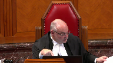
It’s my understanding that the plaintiff is making a claim for benefits of the hydro dam operations.
In this case, the perceived value for hydro production would be dealt by other experts examining that claim.
Yes, that’s the hydro, that’s the hydro, that’s the hydro, that’s the hydro, that’s the hydro,
Speaker 2 (03:37:41): hydro revenue claim.
So what Mr. Bell says is I’m not going to deal with the hydro reservoir aspect because the way the claim is framed is the hydro generation is dealt with by other experts and the experts in this case were Mr. Hemel and Mr. Gillis and there was a great deal of evidence.
There were hundreds and hundreds of pages of expert reports about that.
So you’re right Justice Brown, the two were separate.
He did not deal with that.
Right, but the trial…
Justice Brown (03:38:12): But the trial judge just took the $1.29 and then he added some other non-pecuniary damages to it.
Speaker 2 (03:38:21): Well, there’s a number of other things you looked at, yes, if you look at, I won’t take you because time is running, but if you look at 505 and 506, you can see that there’s a
Overlapping speakers (03:38:28): Thank you.
Speaker 2 (03:38:28): those are the keys where he came to.
I just want to reiterate the point that Mr. Wilson agreed with the valuation if you remove the hydro reservoir aspect.
So that’s a key aspect.
Justice Kerkis-Santis, you’ve been thinking about your question that you asked me about 20 minutes ago.
I haven’t quite had a chance to get to.
If I recall, you asked, and you may have to correct me, about the ongoing, the idea of an ongoing payment because of the loss of the use of the land.
Justice Karakatsanis (03:39:02): Well, it was, the appellant is urging as a breach that Canada permitted the ongoing use, unlawfully permitted the ongoing use of the land without adequately compensating the First Nation for its loss of use and benefit.

Perhaps I’ve misstated it, but I really want you to add the, to address the additional breach that the appellant has proposed.
Speaker 2 (03:39:30): if I understood the argument correctly this morning, it was that it’s an ongoing breach and that the land has never been properly expropriated and therefore there’s continuous breach.
And I believe you or Justice Martin asked, well, does that mean that there’s going to be an infinite payment because the breach will be ongoing because the land has never been ceded, if I can use that term?
And the answer to that would be is the valuation of the land had to be taken at the time of the breach in my submission.
That’s a great deal of what the trial was about.
It is then brought forward based on the economic models which are chosen based on the evidence, in this case it was our prism model.
So no, there would not be in our submission, there would not be a continuous ongoing breach because the land was not properly expropriated or surrendered or negotiated.
There would be a valuation for the use of the land at the time of the breach in 1929.
And that’s the basis upon which the trial judge proceeded.
Or otherwise we end up with, as you mentioned, following that, one of your fellow judges mentioned, if we follow that model, then there’s a never ending stream based upon a never ending set of breaches that will continue on and on and on and on.
And what equitable compensation as I understand from Katzen and Hodgkinson is that you are to be putting the party in position that would have been but for the breach of the fiduciary duty.
So if, but for the breach of the fiduciary duty, what would the land have been valued at?
That’s what the trial judge determined.
Justice Martin (03:41:33): Can I ask you a question here that goes to paragraph 528 and 529 of the trial judge’s decision?
To me there’s just a bit of a disconnect that I hope that you can reconcile for me.
In those parts.
Overlapping speakers (03:41:48): Sorry, Justice Martin, if I just have a moment to get there.
528 and 529 , please.
Yes, I’m there.
Justice Martin (03:41:53): All right.
That’s the part where the plaintiffs were seeking a declaration.
And it seems from there to have said how I read this is that the trial judge is saying that the land as conceded or Canada admits that the plaintiffs have retained the flooded reserve lands.
So it would seem to me that the land itself is not being expropriated and the trial judge goes on and talks about 529 and says that this payment retroactively obtains a flowage easement.
So I’m finding it hard to take the conception of what it went on in 1929 in paragraphs 528 and 529 with the discussion about the expropriation in a balled way of the land, right?
Sorry, go ahead.
Please help me with that
and I may have a follow-up.
Speaker 2 (03:42:56): If we go back to, I believe it’s paragraph 375 and onward, where he, where justice, sorry, just give me a second here, the 358, where the trial judge talks about the flow each easement.

So he says that the land has never been taken, but what he has said is that there’s an easement over the land, basically, that’s been flooded.
So this flow each easement is what has to be valued because the First Nation still maintains the title to the land.
And he mentions, sorry, he mentions that, for instance, if there are mineral rights involved, those would not be ceded to Canada or to the power companies because the land has never been taken.
But he says because the land has never been taken, but it’s essentially not useful because it’s been flooded, the way that it was done was to look at what the easement would be, a flow each easement.
And that’s where he goes through various examples, Hudson Bay Company and the others, where a flow each easement was dealt with.
Chief Justice, I see I have approximately a minute.
If I just have one second to confer with my colleague to see if there’s any.
Overlapping speakers (03:44:14): Absolutely.
Speaker 2 (03:44:15): that I overstepped or need to correct.
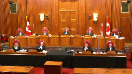
Oh, just one second.
If subjects any additional questions the court may have, those bear submissions, Chief Justice.
Justice Wagner (03:44:42): Thank you very much.
Oh, Justice Roe, I have a question for you.
Justice Rowe (03:44:46): One final go around, why not, eh?
Overlapping speakers (03:44:49): Oh, I know!
Justice Rowe (03:44:49): I mean, something that you’ve been struggling with and we’ve been struggling with, I think I have in any case, from different perspectives, is that the plaintiff brought forward their case with a certain theory of recovery, which was based on the sharing of revenues or profits.
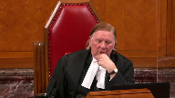
And the evidence that was introduced was in conformity with that.
And then there was other evidence led by the crown, which spoke to various kinds of valuation of market value and loss of use, et cetera.
Then in comes Justice Gleeson in her dissent and says, whoa, neither one of those is actually the right way to go in terms of valuation.
There should have been a focus on highest and best use, and the breach of fiduciary duty by the crown was failing to ensure there was compensation on that basis.
And so in a sense, you’ve got Justice Gleeson saying, this was a bit of a misfire because the proper theory of recovery was not well nourished or situated by the evidentiary record.
Which brings me to my point, if we agree with Justice Gleeson, it seems to me that the sensible thing to do is to give guidance as to the law, to the framework for analysis, and say to the parties, please go back to the trial division, place before the judge evidence which fits into that framework, and that is how you get a proper decision.
Speaker 2 (03:46:44): Much of what Justice Lee, as I understand her reasons, Justice Roe, much of what Justice Gleeson is referring to is the idea that there should have been an opportunity for surrender.
And it’d be my submission that there’s no need to go back to the trial court to deal with that issue in that Justice Zinn dealt appropriately with the fact that there was no surrender in his analysis.
It’s difficult based on what Justice Gleeson said that there should be another try for the plaintiffs to deal with that issue.
Any of those issues, the best in use issue, the surrender issue, were all before the trial judge in a 55-day trial.
There were 22 experts and two lay witnesses here.
The ground was covered.
It may not have come out in the way that was expected by the plaintiffs, but in my submission is what she points to is not a sufficient basis to send the matter back to trial for more evidence.
All right, thank you very much.
Justice Wagner (03:48:06): Thank you.
Mr. McAdam.
Speaker 22 (03:48:13): Good afternoon Chief Justice, Justices.
Chief Justice, I’m not able to see the clock on my screen and it’s my understanding that I have 10 minutes for my submissions this afternoon.
I’d just like to confirm that before I get started.
Justice Wagner (03:48:32): I’ll tell you when you have five minutes left.
Thank you.
Speaker 22 (03:48:37): The Attorney General of Saskatchewan intervenes in this case to deal with one issue.
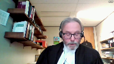
What happens to the land?
The appellants have argued that this is not an issue that’s before the court and that Saskatchewan is overstepping its role as an intervener to raise it.
In response, I say two things.
First, the issue is about what are the principles to be taken into account in determining equitable compensation.
Figuring out what happens to the land is, in my submission, the necessary first step in that process.
Equitable compensation is only available where the land is not being returned.
Second, all that Saskatchewan is asking for is an acknowledgement that it was open to the trial judge to deal with the issue as he did, namely by recognizing an easement as part and parcel of his decision.
Saskatchewan has no interest in the outcome of this case and I don’t intend to make any submissions about whether it was proper for the trial judge to do so given the pleadings and the parties in this particular case.
All I’m suggesting is that’s an option that’s open to other trial judges faced with similar issues in the future.
And let me explain the basis for my position.
When Canada has wrongfully dealt with reserve land and breached its fiduciary duty to a First Nation, Garen tells us that the situation is analogous to that of a defaulting trustee.
In the case of a trustee who has wrongfully dealt with a beneficiary’s land, the usual remedy is to return the land to the beneficiary.
However, that’s not always going to be possible.
If the trustee has alienated the land to a bona fide purchaser for value without notice, then equity protects the purchaser’s interest in the land.
The land is not returned and in those cases equitable compensation is awarded.
The important thing to remember or to recall is that equitable compensation is provided in lieu of the land, equitable compensation is a substitute for the land.
Also at this point, Justices, I think the fact that the Crown wears many hats and that the Crown is no ordinary fiduciary is relevant.
In the usual case, if the land is still in the hands of the defaulting trustee, it will be returned to the beneficiary.
In my submission that rule cannot apply to the Crown.
If the Crown has devoted the lands to some public purpose, the land should not be returned and the court should look at equitable compensation as a remedy instead.
Justice Brown (03:51:34): Do we really have jurisdiction in these kinds of cases to recognize an easement?
Is that a matter for the governor and council?
Speaker 22 (03:51:47): Your Honour, my Lord, it’s my submission that the court does have jurisdiction, the federal court has jurisdiction with respect to equity and that in my submission that jurisdiction is not subject to the oversight of the governor and council.
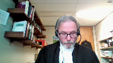
Even if we were dealing with the matter under the Indian Act, the governor and council’s involvement would not be required in order to grant an easement.
In this court’s decision in Opechishat, the court held that the minister could grant an easement over reserve land under section 28.2 of the Indian Act as long as he or she had the consent of the banned council.
And prior to 1951, the minister could do so without the consent of the banned council.
But even in addition to that, Justice Brown, what I would say is that the court’s equitable jurisdiction permits it to recognize interests in reserve land.
The statutory requirements of the Indian Act cannot be the only way that third parties can obtain rights on reserve land.
That would ignore the court’s equitable jurisdiction and in my respectful submission would risk turning the Indian Act into an instrument of injustice to third parties who in good faith have relied upon representations made by Canada about the land.
Overlapping speakers (03:53:11): You have five minutes.
Speaker 22 (03:53:12): Thank you Chief Justice.
I wanted to turn to another issue that comes out of the notion of the crown not being an ordinary fiduciary.
I think it explains the trial judge’s decision in this case that the dam would have been built anyway because the crown is not an ordinary fiduciary and I also think it points to the fact that the duty in this case did not relate to the land or preventing the flooding of the land because the crown could have lawfully taken that land under its expropriation powers.
In my submission the duty related to not being upfront with the First Nation, not paying a fair price determined either through a negotiated surrender or an expropriation and not paying it promptly.
So my justice is to return to my submissions.
When I read the appellant’s factum they acknowledge that water will inundate their reserve forever but they refuse to acknowledge that it was appropriate for the trial judge to recognize a flooding easement and I have to admit I’m left puzzled and a bit uneasy by that position.
The appellant say they haven’t sued the operator of the dam and they haven’t applied for an injunction to shut down the dam but they don’t ever say they won’t be able to take that action in the future.
My submission is that as long as the appellants try to keep this option open then equitable compensation is not the appropriate remedy.
It’s not the right path.
They can’t have their cake and eat it too.
What I would submit is the court should say yes to equitable compensation but the flip side of that or the corollary is that the court recognizes an easement.
In my view they’re two sides of the same coin.
So my Lords to conclude it’s Saskatchewan’s position that there are two remedial paths or options in these cases.
First if the land is going to be returned the court should be looking at things like constructive trust, a vesting order, lost profits, those sorts of things.
Second if the land is not going to be returned then the court should be looking at equitable compensation.
But I would say that even if the land could be returned under equitable compensation this would obviously affect the amount of that compensation.
So in our submission it’s the necessary first step.
You have to determine what’s happening to the land before you can go any further.
It’s simply not an issue that can be left hanging and in our submission compensation for equitable compensation and recognizing the easement in this case were simply two sides of the same coin.
Chief Justice, Justices those are my submissions.
Justice Wagner (03:56:14): Thank you very much.
Thank you.
Ms. Kyle, any reply?
Speaker 1 (03:56:22): Yes, Chief Justice and my colleague Ms. Sigerson will do the reply for the appellants.
Speaker 23 (03:56:32): Thank you Chief Justice, Justices.
I’d like to just touch on a few points that have arisen in our front submissions.
First, the notion of inevitability.
This is an issue that has coloured the proceedings from top to bottom.
Canada relies on the notion that the flooding was inevitable.
And as we argued in our fact of this was a feature of the unique context of this case that we say has led the court astray in its analysis below.
So it’s important to properly characterize what that inevitability conclusion means.
We say it means that Canada made it inevitable that Lacsoul’s lands would be flooded and used for hydrogenation.
The flooding wasn’t inevitable for some independent or natural reason.
It was inevitable because Canada put all the pieces in place for that to happen.
And this we say made it all the more important that Canada uphold its duty to Lacsoul.
It wasn’t inevitable that Canada would breach its duties to Lacsoul, or that Canada would allow the lands to be used unlawfully.
And it was not inevitable that Canada would fail to compensate Lacsoul.
And an expropriation wasn’t inevitable.
We know that because it never happened.
And we say, you know, the fact that Canada made the use of Lacsoul’s lands for hydrogenation inevitable cannot be held against them as the beneficiary who has the right to the benefit of the lands.
And on that point, we refer to you to a line of authorities that’s referenced by the coalition intervener in their factum at paragraph 20, which says that fiduciary cannot avoid liability for losses on the basis that those losses were inevitable if there’s some causal connection between the fiduciary breach and the loss.
And here, the breach was that Canada failed to protect Lacsoul’s reserve lands by allowing the lands to be put to an unauthorized use for flooding.
And there’s clearly a causal connection between Canada’s actions in relation to the interest they were supposed to protect, and Lacsoul’s loss of the use and benefit of their lands.
And to respond to Justice Abella’s question about that connection, and to Canada’s submissions, there’s a common sense causal connection between the breach and the loss, and that is made out here.
And once that is made out, the trial judge can then determine the appropriate assessment of equitable compensation to compensate for that loss that’s been identified.
And using principles of equity and the flexibility of that form of remedy, revenue sharing can represent a way of valuing that loss.
And that was an approach taken at trial, which we say has been an argument that has evolved, but that does represent a way of valuing what was lost.
Justice Abella (03:59:22): Is that an alternative quantum assessment to an amount?
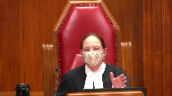
Is it a discretion then for the trial judge to say, I can either calculate it as X, or based on the fact that it appears to be ongoing in nature, leaving aside that argument for the moment, I’m prepared to make it a retroactive resource sharing agreement.
It wouldn’t be both, would it?
Speaker 23 (03:59:49): It wouldn’t be both, Justice Abella, in the sense that the assessment is not necessarily a calculation with that level of rigidity.
What the assessment can take into account is the evidence that shows the value of the use and the benefit of the land as it has been used for those who have benefited from it.
So it’s not to say that it would create in a retroactive way an actual revenue sharing agreement.
And in terms of the the evidence before the court, our friend for Canada’s right, the judge can go on the evidence that was was before him, but in this case the parties were approaching equitable compensation from two different directions.
The appraisal evidence from Canada assumes an expropriation scenario, the plaintiffs were operating on the basis that that was not the right analysis and valued what was taken from them, the use of the lands for hydro generation.
So the fault of the evidence is not on the plaintiffs.
What was taken was the ability to benefit from the lands and that was represented before the court.
Justice Brown (04:01:02): You put all your eggs into the revenue-sharing basket, though.

And if this court isn’t persuaded of that, then it seems to me that the fault for a dearth of evidence on the point may well lie at the feet of the First Nation as well as the crown, if it lies at the feet of the crown at all.
Speaker 23 (04:01:22): Justice Brown, the the evidence before the court below was not only on revenue sharing, there were other models that acted as proxies to deter to allow the court to form an assessment of what the value of the use and the benefit that was lost by the First Nation due to this unconscionable conduct of Canada could be worth based on how it was known at the time to be used and how Canada planned for it to be used.
Justice Wagner (04:01:50): Thank you very much.
So my thanks to all counsel for their submissions.
The court will take the case under advisement.
And the court is adjourned till tomorrow morning, 9.30.
Thank you.